איסלנד בפעם השניה, עם תאומים בני 4
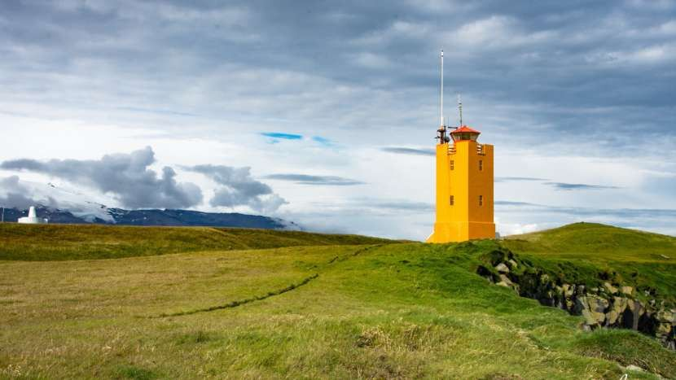
הפעם הראשונה שלנו באיסלנד היתה ביוני 2014, אז אנחנו כזוג צעיר טיילנו בקראוון בארץ משגעת, פראית, רב הזמן היינו רק אנחנו והטבע, לא פלא שעד היום הטיול לאיסלנד נחשב לטיול הטוב ביותר שלנו, והיו מאז עוד הרבה יעדים אחרים, אבל אף אחד לא התקרב לעוצמה של הטיול באיסלנד
לכן כשהילדים גדלו קצת לגיל שסביר לטייל איתם בטבע, ואימת חודש אוגוסט בארץ ללא מסגרת לילדים הכריעו את הכף והחלטנו לחזור לארץ המדהימה הזו.
רבים יגידו שאין מה לעשות עם איסלנד עם ילדים קטנים, שזה לא יעד מתאים וסתם חבל, ובאמת שלא מצאתי הרבה מידע על טיול עם ילדים באיסלנד, אז מטרת הבלוג היא קודם כל להראות שאפשר לטייל עם ילדים קטנים באיסלנד ואפילו להנות בתנאי שמתאימים את הטיול לילדים.
ההחלטה הראשונה שלנו בהתאמת הטיול לילדים היא שלא מקיפים את האי ומתמקדים רק בחוף הדרומי, אמנם שבועיים זה המון זמן והרוב יגידו שאפשר להקיף את האי בלי בעיה אבל מטרת הטיול היא לטייל ולא לדקור נקודות ברכב, הנסיעות ארוכות, המרחקים עצומים ועם ילדים זה פשוט לא יעבוד לטעמי.
הערכות לטיול
איסלנד היא יעד יקר ובטח ובטח לא יעד מתאים לטיול ספונטני, כאמור בשיא העונה- יולי אוגוסט אי אפשר למצוא רכבים\לינה מהרגע להרגע, בטח ובטח בהרכב שלנו. לכן הזמנת כרטיסי הטיסה והקראון היתה כבר בחודש פברואר- מה שמוזיל עלויות טיסה והשכרה באופן משמעותי.
רכב- כמו בטיול הקודם שלנו לאי החלטנו לשכור קראון, בשיא העונה יש קושי אמיתי למצוא מקומות לינה ולתכנן ולסגור מראש בתי מלון סתם מקבע אותנו במסלול שלא תמיד מתאים לנו באותו הרגע, עם קראון יש גמישות, ניתן לישון בכל קמפינג ולא צריך להזמין כלום מראש, היו גם פעמים שהחלטנו לעשות נסיעה מאוחרת בלילה אז פשוט אחרי א.ערב ומקלחות היינו שמים את הילדים בפיג'מות בכסאות ומעבירים למיטה כשהיינו מגיעים, מבחינתם הלילה לא נקטע. עוד יתרונות של קראון עם ילדים זה זמינות השירותים- באיסלנד קר, וכשיש להם פיפי בלילה\בוקר להתלבש ולצאת זה סרט רע, בקראון השירותים איתכם וגם מקלחת, זמין כל הזמן. גם מטבח ומקרר בקראון שימושי ביותר, אחרי מסלול הליכה או נסיעה ארוכה כשהם רעבים פתאום או סתם רוצים לנשנש הכל זמין.
ביגוד- המשפט מהטיול הקודם חרוט היטב בזכרוני- there is no such thing as bad weather there is bad clothing ולכן נערכנו מראש עם ציוד טוב ומתאים; חולצה ארוכה דקה כשכבת בסיס, מעל פליז חם, ומעל הכל סופטשל. מכנס גדקס ומעל מכנס טיולים עמיד גשם עם שכבת פליז בפנים וכמובן נעליי טיולים עמידות למים. הסוד הוא ביגוד קל ונוח ששומר על חום הגוף ומונע רוח כי הרוח מקפיאה.
היות ואנחנו כבר מצויידים ההזמנות היו בעיקר לילדים- מעילי גשם בדקטלון שהיו בשימוש בימים גשומים אבל לרוב היינו עם סופטשל שהוזמנו מנקסט. פליזים הוזמנו מדקטלון. נעליים מנקסט במחירים ממש נוחים. מכנסי גשם מצויינים מנקסט ומכנסי טיול עמיד גשם עם פליז מתחת מאלי אקספרס. כמובן גם כובע ולפעמים כפפות חובה כשיש רוח חזקה.
עלויות- בגדול מחירי הדלק ומוצרים בסופר די דומים למחירים בארץ, גם במסעדות המחיר דומה אם כי היו כמה יותר יקרות.
אטרקציות- בסוף הבלוג מצורף פירוט עלויות אטרקציות שאנחנו עשינו.
איסלנד של 2022 שונה מאוד מזו שפגשנו אי שם ביוני 2014
בניגוד ל2014, היום כבר לא ניתן לחנות ללינה יבשה, לינה שאינה בקמפינג, היכן שרוצים , אחת החוויות המטורפות בטיול הקודם הוא לינה מול לגונת הקרחונים למשל, כיום זה מאוד בעייתי.
כמויות תיירים שלא מביישות אף יעד אירופאי אחר, ב 2014 הרגשנו לבד במרחבי איסלנד, עכשיו היו מקומות שלא היה איפה לחנות את הרכב- כמובן זה גם בגלל שעות הביקור שהיינו, עם הילדים הגענו למקומות יחד עם עוד ים תיירים ולא בשעות ערב מאוחרות, לכן כטיפ תגיעו מאוד מוקדם או מאוד מאוחר למקומות המתויירים.
גידור וסימון שבילים ברור, זה לאו דווקא דבר רע, אבל בניגוד לפעם, שניתן היה ממש לשבת על קצה הצוק והגישה האיסלנדית היתה "לך על זה", היום לצורך שימור הטבע רוב המקומות ממש מגודרים עם שבילים ברורים כדי למנוע נזק לסביבה, מן הסתם מיליוני דריכות נעליים על דשא לא עושה לו טוב. ממש זכור לי קניון Fjaðrárgljúfur שבו ניתן היה לעמוד על הקצה ולהנות מהנוף, ולא לצעוד יחד עם גדוד תיירים בשבילון מתוחם. זה בעיני החיסרון הבולט בטיול באיסלנד בשיא עונת התיירות בחודש אוגוסט.
אחרי ההקדמה הארוכה, הנה סיכום הטיול שלנו:
יום 1 ה-13.8.22- טיסה
היום הוא בעצם יום הטיסות, הטיסה שלנו יצאה בשלוש וחצי בצהריים לכיוון וינה, כמובן שעם כל הבלגן בשדות התעופה, עיכובים ואי הגעת המזוודות ליעדן, טיסתנו יצאה באיחור של שעה וחצי. הגענו לוינה בשבע וחצי שעון מקומי, הטיסה שלנו יוצאת ב21, למזלנו הספקנו לעבור את בידוק הדרכונים ובידוק בטחוני והיתה לנו חצי שעה לנשנש ארוחת ערב, בגלל שהרבה מזוודות לא מגיעות ליעדן שלחנו רק אחת וטסנו עם 3 טרולי איתנו, לא נוח בלשון המעטה אבל עדיף מהסיכון של ציוד חורף שלא מגיע בזמן. הטיסה מוינה יצאה בדיוק מופתי, 4 וחצי שעות טיסה במהלכן הטרור ישנו שנת לילה. כבר בנתיחה בחושך ראינו את הזוהר הכתום המטורף של הר הגעש מרדליר שהתפרץ ב-3 לאוגוסט. נחתנו בשעה 23 וחצי, למזלנו המזוודה היחידה שנשלחה לבטן המטוס הגיעה, סתם נסחבנו עם 3 טרולי. בטרמינל משכנו קצת מזומן, 5000 קרונות, בעיקר חשבנו שנצטרך לקמפינגים- לא באמת, סתם מיותר. וקנינו לנו קצת יין לטיול. טיפ- שימו לב שבאיסלנד לא מוכרים אלכוהול בסופרים אלא בחנויות ייעודיות שנקראות וינבודין- VINBODIN, הקניה בשדה עצמו דווקא זולה יותר מהחנויות האלה שנסגרות כבר בשעה שש בערב.
ביציאה מהשדה תפסנו מונית בעלות של 4000 קרונות למלון שלנו שנמצא 8 דקות נסיעה מהטרמינל- KNOVIN. גם מהדרך ראינו את הזוהר הכתום באופק, מחזה ממש סוריאליסטי. נהג המונית היה בחור פקיסטני, וכאן למדנו שבעונת הקיץ אין מספיק איסלנדים לשרת את המוני התיירים שמגיעים ולכן מגיעים המון עבודים ממדינות זרות, ואכן בהמון מקומות נותני השירות לא היו איסלנדים כלל.
במלון KNOVIN הזמנו חדר ל-4 שעלה לנו 900 שח ללילה, זה המחירים של איסלנד במיוחד בקיץ. החדר היה סביר לגמרי והתאים לדרישה שלנו שהיא נטו לישון לילה בנעימים עד לקבלת הקראון למחרת.
עייפים ומרוצים מחכים לתחילת הטיול מחר.
יום 2 ה-14.8.22- בכל טיול יש בלת''מים
בוקר טוב איסלנד. קיווינו שאחרי הטיסות המעייפות הטרור יתן לנו לישון לפחות עד 8, בפועל כולנו הקצנו בשעה 6 שעון מקומי, מצד שני בארץ השעה כבר 9 בבוקר… לקחנו את הזמן בלרבוץ עוד קצת כי את הקראון תיאמנו לשעה 10. ירדנו לארוחת בוקר לא רעה בכלל והחלטנו להתקשר לחברת ההשכרה שאמורים לאסוף אותנו בעשר שאולי יכולים להגיע כבר עכשיו כי אנחנו מוכנים, ו… יש בעיה
הקראון שלנו יהיה מוכן רק בשבע בערב, מסתבר ששבוע שעבר היתה סופה חזקה באי שהשביתה 3 רכבים אז הרכב שלנו עדיין בטיול וחוזר רק בערב. הציעו לנו לקחת רכב רגיל ולטייל בינתיים עד הערב, עם עוד כמה תוספות חינם לקראון כפיצוי, נו מה לעשות יאללה נתחיל את הטיול ברכב רגיל מה אכפתת לנו.
מגיעים לתחנת ההשכרה של TOURING CARS שהם יחד עם EUROPECAR שמים שם את המזוודות ולוקחים רק דברים חיוניים.
גם ככה תכננתי להתחיל את הטיול בחצי האי רייקאנס, רק שהשעה ממש מוקדמת והכל נפתח רק בתשע עשר. התלבטנו אם להתחיל את היום במוזיאון הויקינגים ב-VOGAR אולם בחוץ יום יפה עם שמש, חריג מאוד לאיסלנד לכן החלטנו דווקא לטייל יותר בטבע, תמיד נמצא זמן למוזיאון, ספויילר- למוזיאון הזה לצערי לא מצאנו זמן אחרכך.
התחנה הראשונה שלנו היא מגדלאור- Garður Old Lighthouse, הנמצא בחלק הכי צפון מערבי של חצי האי רייקאנס. נסיעה של 20 דקות ואנחנו שם. מדובר באתר קמפינג ובכפר פצפון לידו, אפילו בכפר כזה פצפון יש בריכה. המגדלאור מרשים ממש, מדובר במגדלאור הגבוה ביותר באיסלנד בגובה 28 מטר שנבנה ב-1944. ממש לידו יש עוד מגדלאור קטן יותר וישן יותר שכבר לא בשימוש. הגענו בשעת שפל וים רגוע, המוני שחפים חגים מעלינו וריח חזק של דגים ואצות, כמו באיסלנד אין באמת יום יפה כי הרוח די חזקה ומקפיאה. ליד המגדלאור יש גם ספינת דייג ישנה שניתן לעלות עליה, ניצלנו את ההזדמנות להראות לילדים ספינת דייג מקרוב.
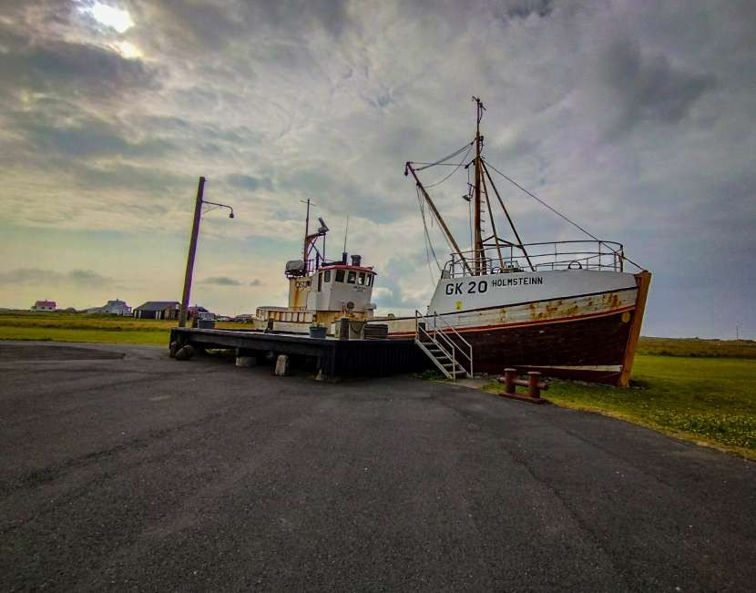
שוטטנו סביב המגדלאור וקצת על החוף המלא באצות שנסחפו ומשם נסענו הלאה לכיוון רייקאנסביר.
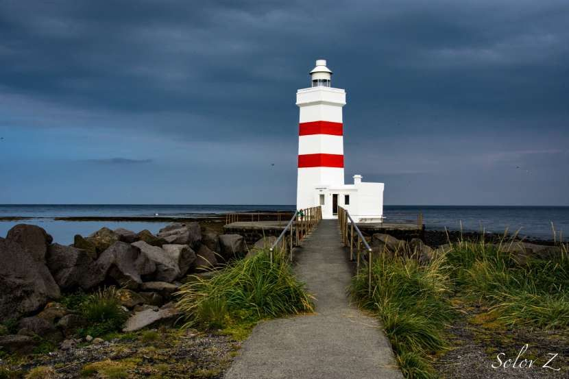 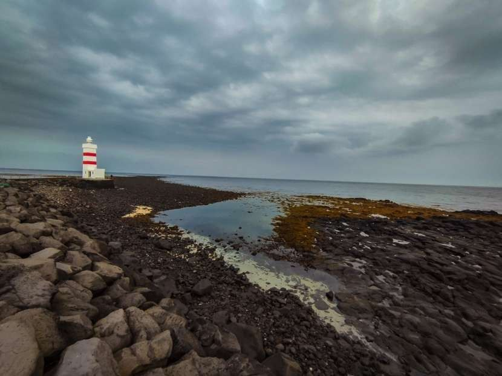 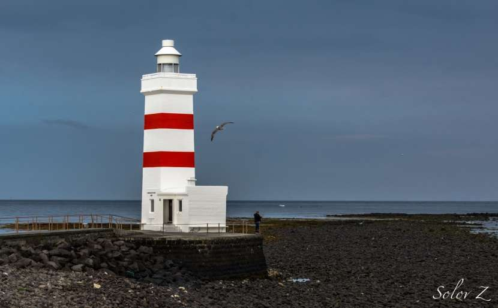
רייקאנסביר הוא בעצם ריכוז של 3 עיירות שהפכו יחד ב-1994 ליחידה מוניציפאלית אחת המונה כ-20000 תושבים. חנינו ליד הטיילת היפה וטילנו לאורכה, בדרך עלינו על אוניה קטנה שמשמשת במיצג בטיילת ומשם הקפנו את המזח בדרכנו למערת הענקית- Giantess Cave. מדובר בנקודה חביבה לילדים המקומיים שמשמשת גם כעץ מוצצים, מערה גדולה חצובה בסלע ששם גרה ענקית, יש מיטה ענקית, כסא ענקי וכמובן קולות הענקית שהפחידו את הצוציקים שסירבו בהתחלה להכנס למערה עד שראו את הענקית שיושבת בפינה שלה שהיא בעצם בובה גדולה…בגלל שזה יום ראשון מידי פעם מגיעים גם ילדים מקומיים לשחק במערה, לשכב במיטה של הענקית, לנעול את נעליה וכו. כמובן התעכבנו גם על לראות סירות שנכנסות לנמל הקטן ולזרוק אבנים לים, אמרנו כבר יום יפה היום.
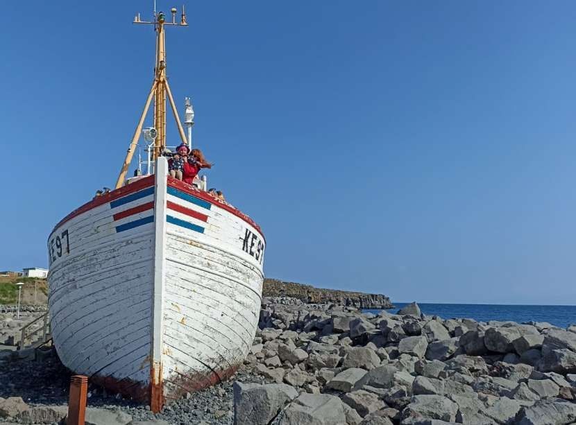 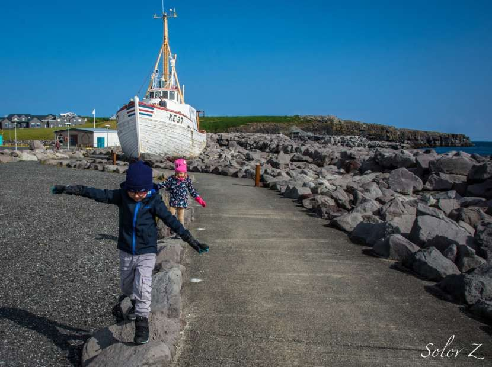
קרקורי הבטן גרמו לנו לחשוב על אוכל ולכן התחלנו לחפש מקום לאכול צהריים, לא רצינו משהו יוקרתי אלא פשוט, מצאנו מסעדה של מלון נחמדה מאוד- the library, באר ביסטרו נחמד, אוכל סביר ביותר.
משם החלטנו לנסוע לאתרים המרכזיים של רייקאנס, השעה רק שתיים, יש לנו מלא זמן עד שש בערב והכל יחסית קרוב. התחנה הבאה שלנו זה הגשר בין הארצות סמוך לעיירה הפניר.
קצת הקדמה למי שלא כלכך בקיא בגיאולוגיה, איסלנד יושבת על הבקע המיד אטלנטי- the mid Atlantic ridge שזה איזור מאוד פעיל מבחינה גיאותרמית. הבקע חוצה את איסלנד מדרום מערב לצפון מזרח ובאיסלנד הבקע הזה עולה מעל פני הים. באיזורים של הבקע יש פעילות גיאולוגית ענפה כמו גייזרים, בוץ מבעבע, עשן שיוצא מהאדמה וכמובן גם שברי הבקע. הבקע הזה הוא המפגש בין הלוחות הטקטוניים של אירואסיה והצפון אמריקני.
התחנה שלנו גשר בין הארצות הוא בעצם גשר קטן בין שני צידי הבקע. הדרך לשם מדהימה, כל איזור רייקאנס מאוד מיוחד, מזכיר שממת ירח, בין לבין שדות לבה עצומים מכוסי אזוב צהוב והכי מפתיע זה הרוחות, אין אף עץ ברדיוס קילומטרים ומידי פעם זוכים למשבי רוח חזקים שממש מסיטים את הרכב הצידה. אנחנו כמובן חוצים את הגשר וגם מטיילים בבקע, הצוציקים נהנים לפזר חול שחור.
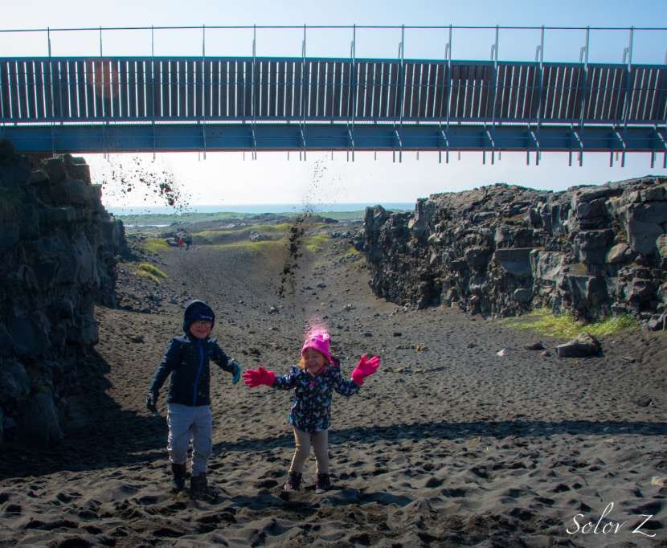
מזג האוויר ממש מתעתע, שמש שמיים כחולים אבל בחוץ הרוח מקפיאה עצמות לכן גם אנחנו לבושים היטב גם עם כובעים וכפפות לילדים.
מהגשר המשכנו לאיזור הגיאותרמי גוונקווויר- Gunnuhver Hot Springs, הסאגה האיסלנדית מספרת על אישה בשם גונה, כשנפטרה הפכה לרוח ועשתה הרבה צרות לחיים בסביבה עד שכומר הכפר בנה לה מלכודת והפיל אותה למעיין, ומאז היא בעצם שוכנת במתחם ומבעבעת בוץ ומפיצה עננים עם ריח גופרית.
למתחם יש 2 חניות אחת מהצד של המגדלאור ואחת מהצד השני, ליד יש גם מפעל גיאותרמי ורואים את המים בצבע טורקיז חלבי שהם בפעם מה שנפלט בתהליך ייצור האנרגיה.
מיד מכה בנו ריח הגופרית, אנחנו הולכים על שביל שבנוי מלוחות עצים עד המעיין ממנו יוצא ענן עשן לבן ומסריח, פיצקה קראה לו 'סריחי'. אין ספק שזה מקום מרשים להתחיל בו את הטיול לאיסלנד. אחרי שראינו את הרוח הכועסת של גונה בצורת הסריחי וקצת בוץ מבעבע, המשכנו לכיוון המגדלור, טיילנו קצת סביבו.
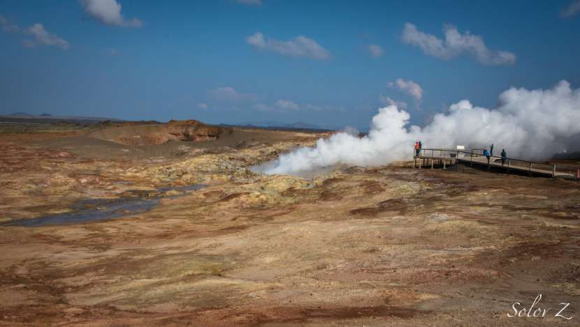 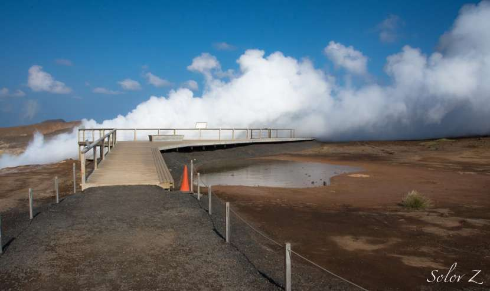 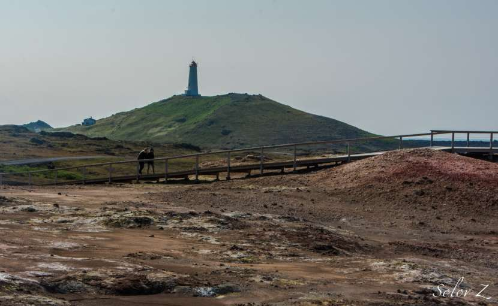
רצינו להמשיך לכיוון צוקי Valahnúkamöl, הדרך לשם בתשלום או שניתן לחנות ליד המגדלור וללכת ברגל. אנחנו ויתרנו, הילדים כבר היו די עייפים מכל הטיול ברוח וקיוונו שישנו קצת ברכב, השעה כבר חמש ולכן החלטנו לחזור לכיוון רייקיאנסביר ולמצוא קפה ומאפה ולקוות שהקראון שלנו כבר מוכן וכמובן גם לעשות קניות לצייד את הקראון, כלל ראשון בטיול קראון- ביום הראשון קונים אספקה.
הילדים כאמור נרדמו באוטו ואנחנו עצרנו בתחנת דלק בכניסה לעיירה לנשנוש וקפה, משם לסופר בונוס החביב והזול יותר, אם כי בהמשך דווקא אהבנו יותר לעשות קניות ברשת קרונאן שיש שם יותר מבחר אם כי טיפה יותר יקר מבונוס. שיחה מהירה לחברת ההשכרה ואכן הקראון שלנו מוכן, איזה כיף.
בשעה שש מסרנו את הרכב והחלפנו לקראון. מניסיון העבר החלטתי לפרוק הכל כבר בחניה, אין טעם להגיע לקמפינג עייפים ולעסוק בפריקה. טיפ למי שמשכיר קראון לראשונה, שימו לב שרוב הקראונים מגיעים בלי כלום, חלקם כן מציידים בציוד מטבח בסיסי אבל אין מצעים\מגבות כסאות פקיניק וכו' אלא אם ביקשתם בהזמנה- בתשלום נוסף כמובן. בטיול הקודם לקחנו מצעים מהבית ולא הזמנו, הפעם ל-4 אנשים כבר העדפנו להזמין עם הקראון, הזמנו גם בוסטרים לילדים, מנגל, שולחן פיקניק וכסאות. בדיעבד המנגל היה מיותר, היינו עייפים מכדי להדליק אותו.
חצי שעה של עבודת צוות ואנחנו מוכנים- הבגדים במקום, מצעים מסודרים אוכל במקרר, אפשר לצאת לדרך.
התכנון המקורי היה לנסוע לעיירה קוורגרדי, כשעה וקצת ולמחרת להתחיל מוקדם את מסלול הרייקדלור, אבל השעה כבר שמונה בערב, אז החלטנו לנסוע לכיוון גרינדביק ולישון שם ולהמשיך בבוקר מה שהתברר כטעות נוראית. מדובר בנסיעה של חצי שעה עד גרינדביק, הנוף משגע, שדות לבה בכל כיוון, בדרך עברנו ליד הלגונה הכחולה, אני ובעלי כלכך רצינו לעצור שם, ואולי בדיעבד היינו צריכים, אבל תכננתי שאת הלגונה נעשה בדרך חזרה- ביום האחרון אז המשכנו לגרינדביק. הגענו לקמפינג וחשכו עיניינו, אין מקום לדרוך מרוב אנשים ורכבים, הכל מלא. לא לקחתי בחשבון שרוב מי שמגיע להר הגעש מרדליר יחנה שם ללילה, שבאיסלנד לא יהיה מקום בקמפינג זה באמת נדיר מאוד. לדעתי זה פשוט נובע מחוסר הכוונה לגבי חניה, באוסטריה למשל בכל קמפינג יש איזור מוגדר לאוהלים, איזור לקמפרים ואיזור לקראונים, גם בקמפינגים הגדולים של איסלנד זה ככה אולם בקטנים זה תחנה איפה שבא לך אם יש מקום. לא פעם ראינו בטיול אוהל מוקם במקום לקראון עם חיבור לחשמל וכו', אם תכנון נכון גם בגרינדביק היה יכול להיות מקום.
מאוכזבים חזרנו שוב לכיוון רייקינסביר והמשכנו לכיוון קמפינג בווגר-VOGAR, חצי שעה נסיעה משם חזרה לכיוון רייקנסביר. מדובר בקמפינג חמוד ושקט, תשלום דרך אפליקציה עלות 4200 קרונות לזוג עם חיבור לחשמל, הילדים חינם, זו גם העלות ברוב הקמפינגים האחרים שנהיה בהמשך הטיול. כבר ממש מאוחר, מבשלים צ'יק צ'אק פסטה לילדים, מקלחות זריזות בתוך הקראון- כי קור אימים לצאת החוצה ולישון, בעונה זו השמש שוקעת רק בתשע וחצי וחושך מתחיל לקראת אחת עשרה, לפי אפליקצית אורורה אין צפי להיום אז אפשר לישון בשקט.
יום 3 ה-15.8.22- העמק המעשן
קמנו לבוקר שמשי ויפה, שוב בשש וחצי בבוקר שעון איסלנד, נמרחנו עוד קצת במיטות בזמן שהצוציקים ראו סרט בטאבלט, ארוחת בוקר זריזה וקדימה לדרך. התכנון היום זה מסלול הרייקדלור בעיירה קוורגרדי ואם ישאר זמן לטייל שם ולנסוע למרכז הלבה- the lava center. בשעה שמונה בבוקר יצאנו לדרך, לפי גוגל מפות משך הנסיעה כשעה ורבע, נוסעים דרך האיזור הדרום מערבי שם מרוכזת רוב אוכלוסיית איסלנד ואכן נראה שנוסעים במדינה אירופאית רגילה, אולם ברגע שעולים על כביש 1 הטבע מתחיל להתגלות.
לאט לאט מתקרבים לקוורגרדי ומרגישים את הרוחות המשנבות, עוצרים רגע לצילום מעל העיירה, כמעט עפים ברוח, ברקע כבר רואים את העשן שיוצא מהאדמה סביב העיירה. כאמור היינו בקוורגרדי עוד ביוני 2014 ואיזה הבדל עצום התחולל בגודל העיירה, הופיעה שכונה חדשה, פתאום נדמה שיש יותר עצים סביבה. אנחנו מיד המשכנו לכיוון המסלול של הרייקדלור- העמק המעשן, חוצים את העיירה ואת מגרש הגולף, ומגיעים לחניה מסודרת, יש אפליקציה לתשלום חניה, למרות שקראתי בפורומים שהרבה הסתבכו איתה לנו עבד ממש חלק. במקום יש גם מסעדה, איזה שינוי מפעם שעברה שלא היה חניון באמת אלא שטח עפר קטן בו ישנו בלילה שלפני המסלול, לא מסעדה ולא נעליים…
איך מתארגנים למסלול של 4 קמ לכיוון עם ילדים בני כמעט 5- הרבה שוחד. העמסנו את כיסי מכנסי הטיולים שלהם בממתקים, תיק שלוקר שגם הוא הועמס בחטיפים לעייפה, כובע וכפפות לדרך כי הרוח חזקה מאוד למרות השמש, והכי חשוב מקלות הליכה- לא כי הם צריכים את זה אלא כי זה גימיק נחמד שמדרבן אותם להליכה. כמובן לא לשכוח בגדי ים- ממליצה לשים מתחת לבגדים ולקחת מגבת.
עמוסים לעייפה בכמות ממתקים וחטיפים שלא יביישו אף גזלן יצאנו לדרך.
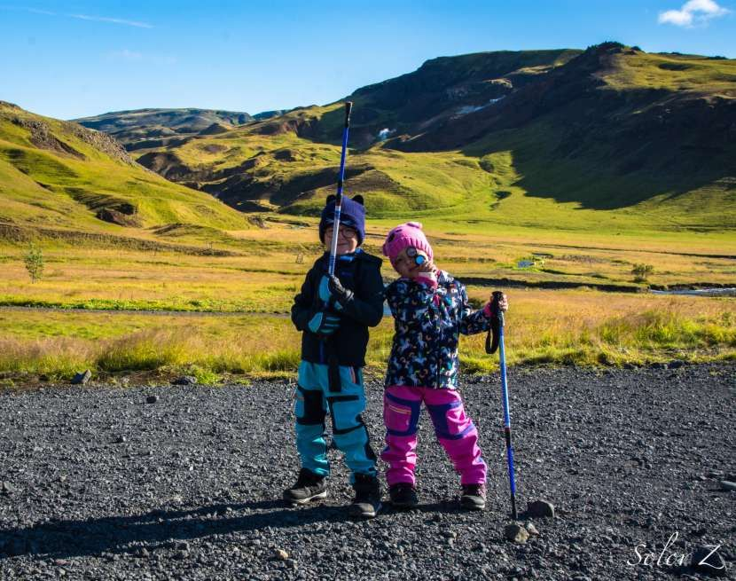
המסלול מתחיל ממש מאחורי המסעדה, השביל ברור מאוד- מעלה מעלה להרים. ההתחלה נחמדה, פוגשים הרבה כבשים שמטיילות איתנו, הילדים כמובן מתלהבים מהכבשים ומפתחי העשן שיוצא מהאדמה בכמה מקומות בסמוך למסלול. לדעתי המסלול בכלל לא קשה, גם לפני 8 שנים עשינו אותו ללא שום קושי וזו הסיבה שסחבתי את הילדים, להם זה היה טיפה גבולי- לא שהעליות היו קשות מידי אלא פשוט הליכה ארוכה. פיצקה עשתה את המסלול בגבורה, ללא קיטורים ורק עצירות לנשנושי אנרגיה- נחשי גומי אלא מה.. הבחור הצעיר, וגם המבוגר די קיטרו
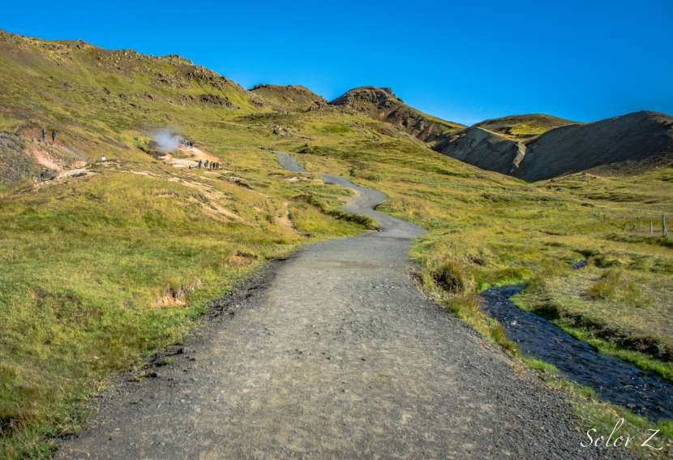 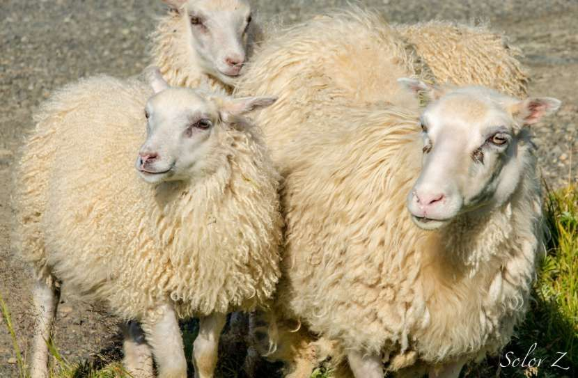
ההליכה שווה כל רגע ורגע הן מבחינת היופי של המסלול שנגלה עם כל צעד, והן מבחינת הפרס שמחכה בסוף- נהר מים חמים חמים שפשוט כיף לרבוץ בו ולהרפות את השרירים מההליכה. הדבר היחיד שהורס בעיני זה המוני המטיילים, שוב אני יודעת שאני משווה לתקופה שכבר לא קיימת באיסלנד אבל פעם קודמת היינו שם לבד לבד רק אנחנו והכבשים, היום זה הרבה יותר המוני, מצד שני סידרו שם שביל עץ, סכרו מעט את הנהר כך שנוצרו ממש בריכות שכשוך, ועשו פינות החלפת בגדים.
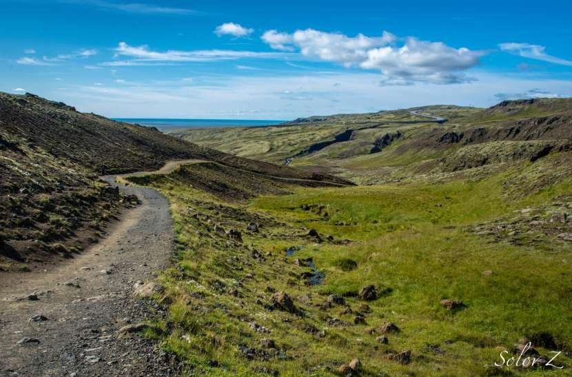 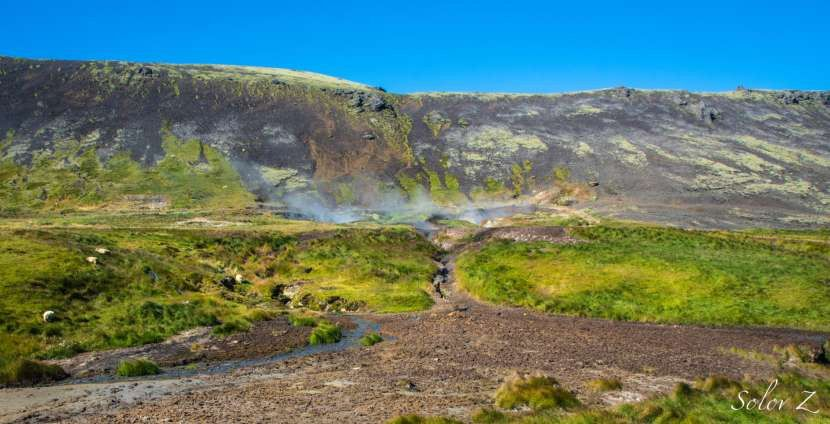
אחרי שהתחממנו היטב והאדמנו כמו סרטנים אנחנו מתלבשים וצועדים חזזרה, הירידה מן הסתם הרבה הרבה יותר קלה.
הלקח שלנו מהמסלול- יותר אוכל וחטיפים, היינו מורעבים. איזה מזל שיש מסעדה, אחרי מסע כזה צריך משהו חם ומשביע- מרק, המרקים האיסלנדיים מפתיעים לטובה, אחרי נשנוש מרק אנחנו חוזרים לקראון, אין לאף אחד כוח לזוז אז שמים לילדים סרטון בטאבלט ואנחנו עושים שנצנוצ צהריים קצר.
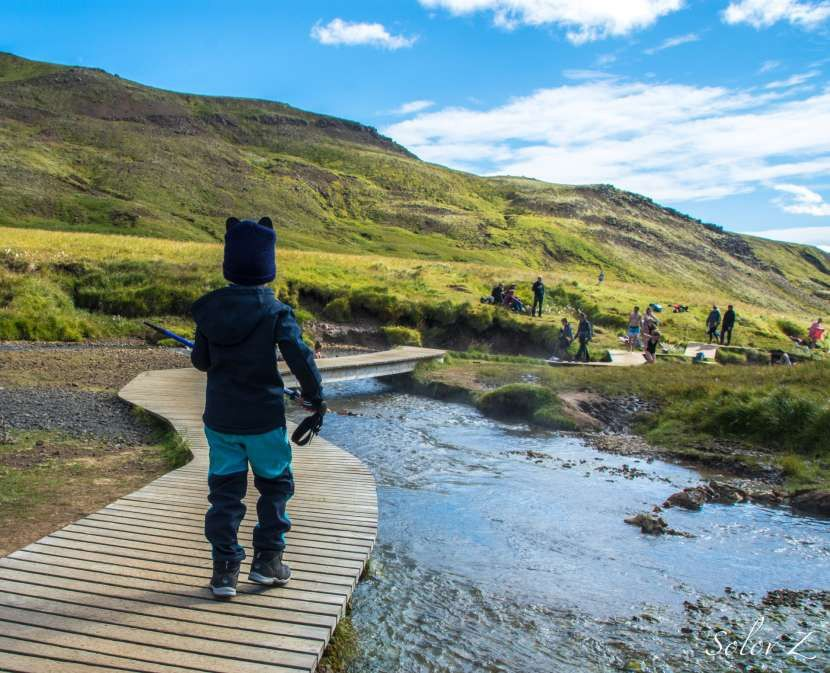
סהכ התחלנו את המסלול ב-11 וסיימנו לקראת שלוש. בשעה ארבע וחצי אנחנו מתארגנים לתזוזה, הערכת זמנים מהירה מגלה לנו שלא נספיק למרכז הלבה שנסגר בשש בערב ונמצא שעה נסיעה מכאן, אנחנו מחליטים לנסוע לכיוון העיירה Hvolsvöllur, יש שם בריכה, סופר וקמפינג והכי חשוב היא הכי קרובה ליעד של מחר- איי וסטמן.
הילדים רק התיישבו בכסאות הבטיחות והרכב הונע וזהו- הם כבר עמוק בשינה. הגענו לעיירה תוך שעה ומיד בעלי קפץ לסופר, הפעם קרונאן, לדבריו סניף מעולה עם הרבה מבחר של דברים טעימים.
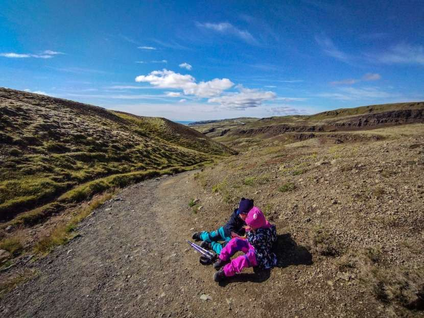
הקמפינג נמצא מהצד השני של הסופר, ליד תחנת הדלק, קמפינג גדול ומרווח, אחד הטובים שהיינו בו. התשלום מתבצע ע"י נציג שמגיע לקראת הערב, כן אפשר לשלם באשראי. יש במקום מכונת כביסה ומייבש חינם, טיפ לגבי כביסה: אם הגעתם והמכונה כבר פועלת, תשאירו את הכביסה שלכם ליד שידעו שאתם הבאים בתור, אחרת חבל תצטרכו לחכות עוד ועוד…
חנינו בקמפינג, הבריכה אמורה להיות פתוחה עד תשע בערב, השעה שש וחצי, מנסים להעיר את הצוציקים- ללא הצלחה, בינתיים הכנו ארוחת ערב, עוד ניסיון והתעוררו, עד שאכלו כבר היה שמונה בערב, ראינו שאין לנו עם מי לדבר אז עשינו להם מקלחת זריזה בקראון ולישון- עד הבוקר.
אנחנו דווקא נהננו ממזג אויר איסלנדי קיצי ובזמן שחיכינו לכביסה טיילנו סביב הקמפ וצילמנו את הסוסים המדהימים שיצאו לטיול שקיעה.
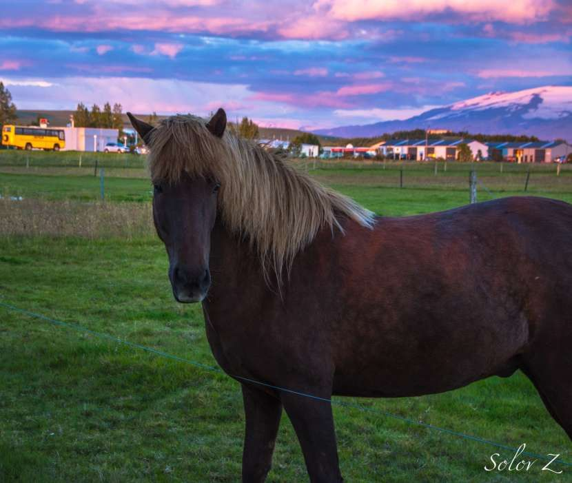 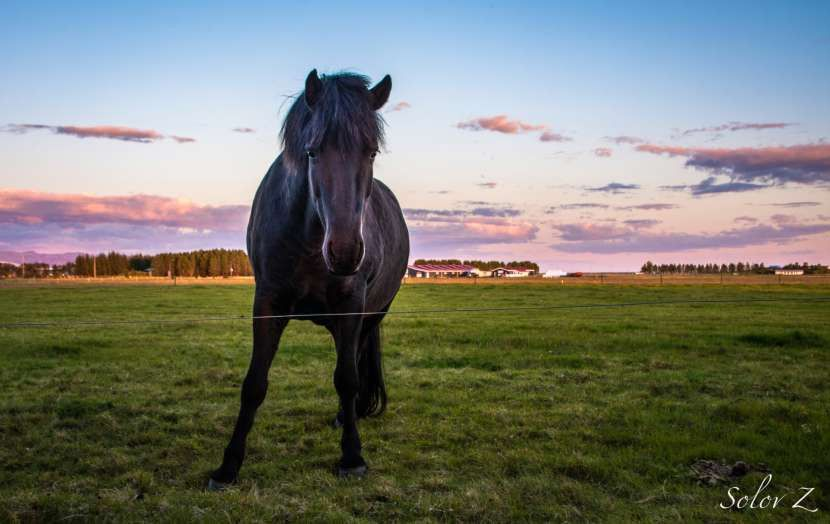
יום 4, 16.8.22- איי וסטמן
עוד בוקר שמשי ונפלא מקדם את פנינו. היום אנחנו שטים לאיי וסטמן, בטיול הקודם לא ביקרנו שם אז אנחנו ממש מתרגשים ומאושרים שמזג האוויר לטובתינו, יום שמש ועוד ללא רוח בכלל זה נדיר באיסלנד.
את ההפלגה במעבורת הזמנתי עוד מהארץ, מדובר בספינג גדולה שניתן להשיט גם רכב ואפילו קראון- יש באיים קמפינג. אולם מחיר השטת הקראון הוא לא זול בכלל ובשכלול העדפנו לקחת סיור מאשר לנסוע עם הקראון, מה שבעיקר הפחיד את בעלי זה לתמרן את הקראוון בלהיכנס ולצאת מהספינה.
באתר החברה יש את שעות ההפלגה (לשימושכם האתר- https://herjolfur.is/en/), אנחנו הזמנו את ההפלגה של רבע לאחת עשרה בבוקר בעיקר כדי לתת לנו בוקר רגוע להתעורר להתארגן ושיהיה זמן להגיע למקום- בערך חצי שעה נסיעה מהקמפינג.
את האיים רואים כבר מהדרך והם נראים כלכך קרובים, ממש מרחק נגיעה-
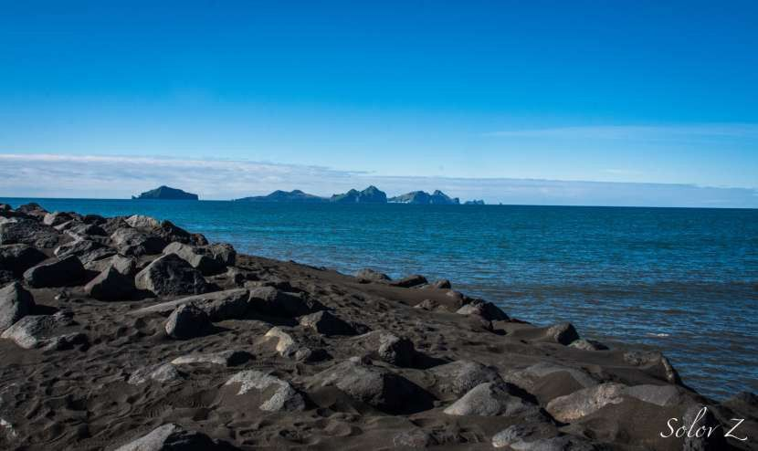
מדובר בארכיפלג של 14 איים וסלעים שנקראים איי וסטמן ונמצאים סמוך לקו החוף הדרומי של איסלנד, האי הכי צעיר הוא סורטסי שנוצר בהתפרצות של 1973- לא ניתן לטייל עליו, הכניסה לאי היא רק מדענים שעדיין לומדים על תופעות גיאולוגיות כי האי עדיין גדל מעט כל שנה. האי המיושב נקרא היימאי.
ההתיישבות על האי החלה כאשר עבדים אירים נמלטו לאי בעקבות רצח אחיו של הויקינג המנהיג. המנהיג הויקינגי אינגולפור רדף אחריהם ורצח אותם כנקמה, השם איי וסטמן (מערב) ניתן בגלל שאנשי אירלנד נודעו בפני הויקינגים יוצאי נורבגיה כאנשי המערב WEST MEN ומכאן נגזר שמו של האי שניתן לו לאחר שהעבדים האיריים נרצחו שם.
הכלכלה באי התבססה על דיג, אולם ב-1973 האי התפרסם בזכות התפרצות הר הגעש אלדפל, התפרצות שהחלה בליל ה-23 לינואר. ההר פלט כמויות אדירות של אפר, תושבים הבחינו בלבה שהתחילה לזרום לכיוון הנמל והיה חשש אמיתי שהלבה פשוט תהרוס את הנמל שהוא עיקר הפרנסה של האי, פינוי התושבים היה מופתי, ללא נפגעים, ובכדי לעצור את הלבה מלהתקדם לנמל שאבו את מי הים והזרימו אותם על הלבה בכדי לקרר אותה וזה עבד, הנמל ניצל, עד היום ניתן לראות היכן הלבה נעצרה וכמה בתים נקברו תחתיה. כ-400 בתים נהרסו בהתפרצות. ההתפרצות נמשכה כחצי שונה אולם רק לקראת 1975 כ-85 אחוז מהאוכלוסיה של האי חזרו חזרה.
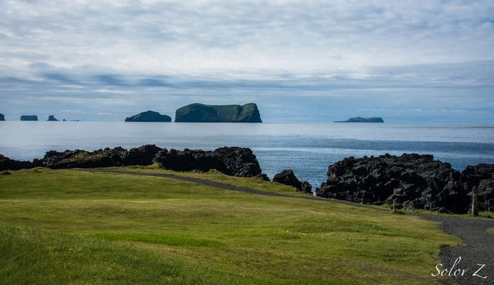
השייט עבר בנעימים, הצוציקים נורא התלהבו לטייל בסיפון ולתצפת על האיים המתקרבים. בשעה 11 וחצי הגענו לנמל הקטן של האי הימאיי. אני מאוד ממליצה להגיע לאיים עם רכב בכדי שתוכלו להיות ניידים ולחוות את המקומות כמו שצריך, אמנם האיים קטנים אבל ההליכה לחלק הדרומי של האי לא קצרה ולמי שמוגבל בזמן כדאי להיות נייד. אנחנו שכרנו סיור במיניבוס, הסיור יוצא ב-12 מדוכן הממוקם ממש ליד הנמל, מדריך מקומי מקסים עם המון ידע. התחלנו את הנסיעה לכיוון הצוקים שליד הנמל, שם לפי המסורת של המקומיים מתאמנים בקפיצה על צוקים וטיפוס בכדי לאסוף ביצים של הציפורים המקננות במקום. יש שם שני חבלים לפי רמות קושי ובעצם כל ילד מגיל 8 לומד איך לטפס ולאסוף ביצים.
משם המשכנו לכיוון הקמפינג ומסלול הגולף שם מתקיים הפסטיבל השנתי של איי וסטמן- בסוף חודש יולי בכל שנה מגיעים כ-30 אלף איש למקום ולפסטיבל, זה אירוע מטורף בסדר גודל איסלנדי. במקום נמצא גם הבית הויקינגי הראשון, בו גרו הויקינגים, נשותיהם והעבדים וכן הכבשים שלהם.
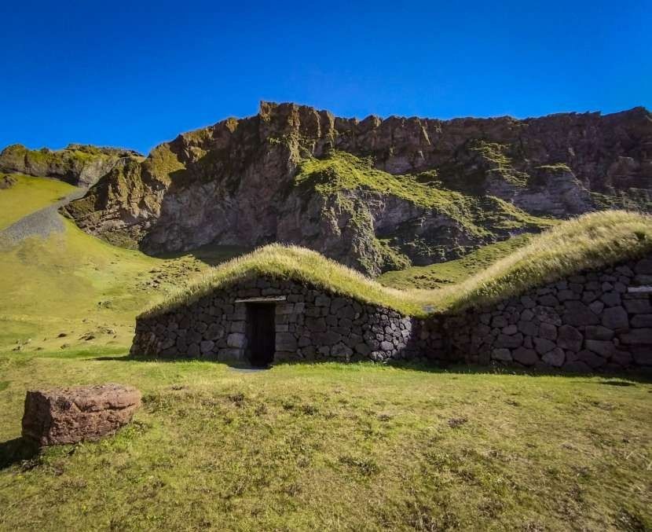 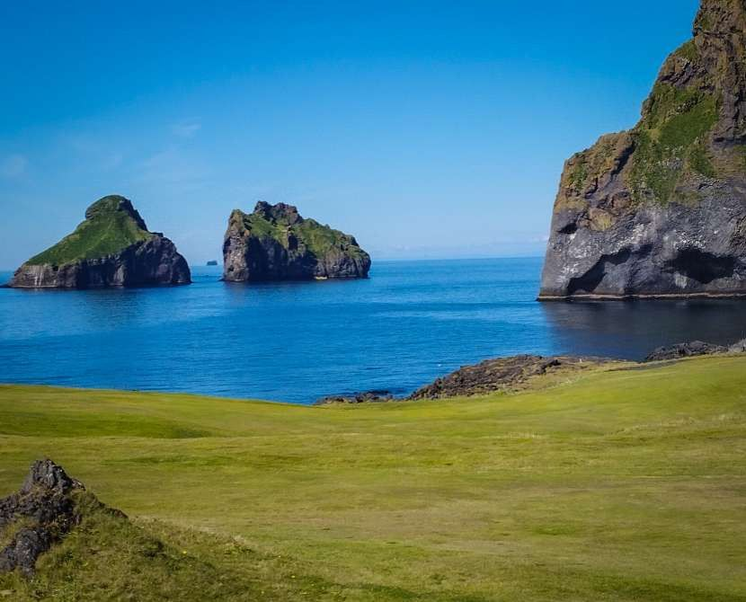
משם עברנו דרך צוק הפיל המפורסם, תצפית מרשימה יותר ניתן לראות דרך הים ולמי שרוצה לשוט בסירת ריב (RIB), לצערי בגלל גיל הילדים זו לא היתה אופציה. משם המשכנו לחלק הדרומי של האי לאיזור שנקרא Stórhöfði לתצפת על הפאפינים. הפאפין זו הציפור הלאומית של איסלנד והם מקננים בהמוניהם באיזור הזה, אולם חשוב לזכור לקראת אמצע אוגוסט הפאפינים עוזבים את הקינים ומבלים בים את עונת החורף, עם בוא האביב כל פאפין יחזור לאותו מקום ממנו בקע בכדי לבנות את הקן שלו. יש ספר ילדים מקסים שנקרא THE LITTLE PUFFLING שמספר על הפאפין מרגע בקיעתו ועד לתלאות שהוא עובר כשנאלץ לעזוב את הקן. באי יש מסורת כאשר הגוזלים יוצאים מהקינים בפעמים הראשונות הם הרבה פעמים מתבלבלים וקופצים לכבישים או חלילה נטרפים ע"י השחפים, ולכן ילדי האי יוצאים בשעות הערב לחפש את אותם פאפינים תועים ומשחררים אותם לים. הצוציקים כלכך אהבו את הספר והסיפור על הפאפינים שכל הטיול קראנו אותו.
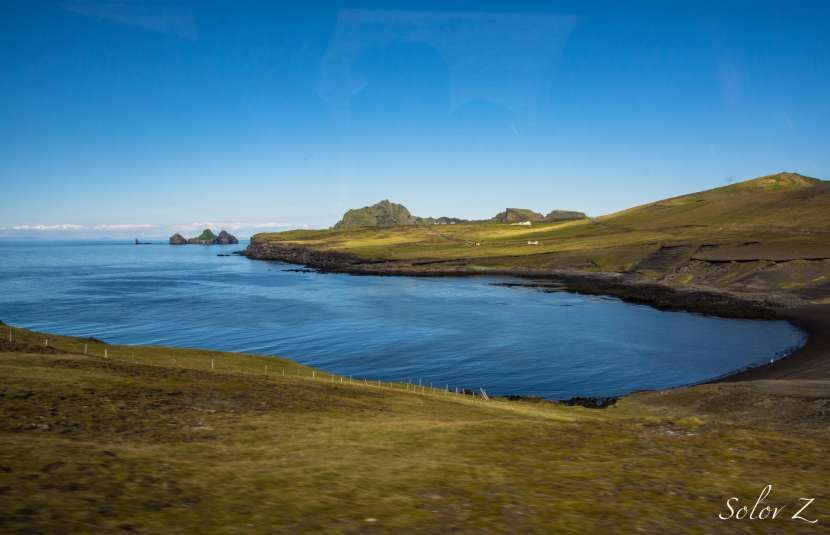 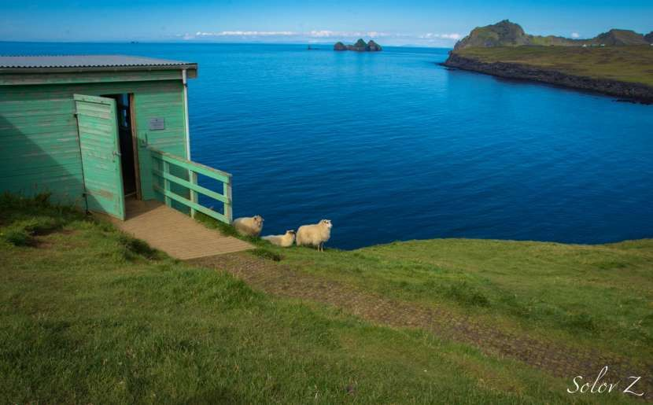
לצערי עם עדשת המצלמה שלי לא ניתן היה לצלם טוב את הפאפינים למרות שהיו בהמוניהם במחילות על צלע ההר, כדאי להביא עדשה טובה לצילום ציפורים. בלי קשר לפאפינים המקום עצמו משגע, כרי דשא ירוק שצונחים לאוקיינוס כחול, כבשים משוטטות שמגיעות לבקש ליטוף ונשנוש, והכי מדהים שאין היום בכלל רוח, זה כמובן השקט שלפני הסערה כי מחר צפויה סערה בעוצמה של 17 מטר לשניה, אבל על כך בהמשך.
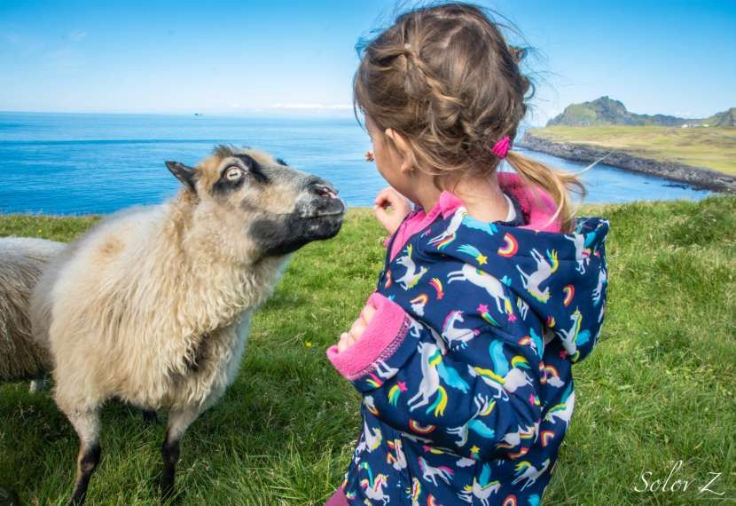
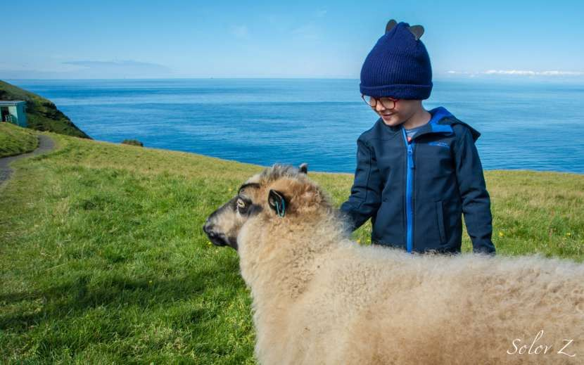
משם נסענו לכיוון הר הגעש אלדפל, לא ניתן לעלות ללוע עם המיניבוס מן הסתם, אבל גם לעמוד למרגלות הר הגעש זו חויה מדהימה, הקטנים אספו המון אבני לבה לאוסף. ברקע ניתן היה לראות את האייפייטליוקטל- ההוא מ-2010 שהשבית את התעופה באירופה.
הר הגעש אלדפל נמצא די קרוב לנמל ומי שבלי רכב יכול להגיע לשם ברגל, אנחנו המשכנו בסיור לאורך נתיב הלבה שכיסה את הבתים וכמעט את הנמל. בשעה שתיים וחצי הסיור נגמר, חזרנו לנמל.
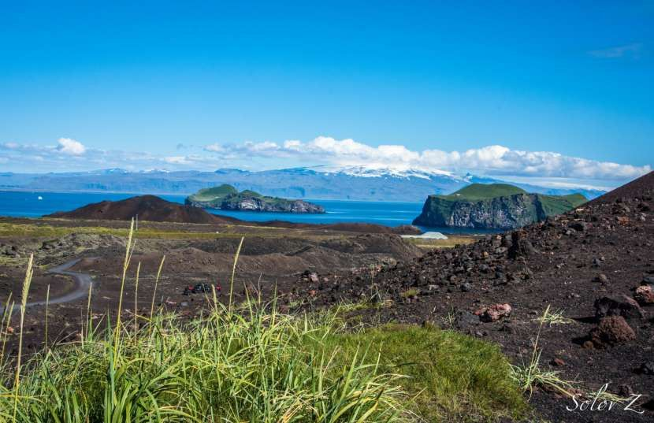
היינו רעבים אז הלכנו בעקבות המלצת המדריך למסעדה סמוכה- GOTT, ואו איזה טעים, נראה לי זו אחת המסעדות הטובות שאכלנו בה. סמוך למסעדה יש מבשלת בירה אולם מפאת חוסר זמן לא יצא לנו לבקר בה וחבל.
שבעים המשכנו למוזיאון לויתני הבלוגה, שני לויתני בלוגה חיים באיים בשמורה, בימים הקרובים מעבירים אותם ללגונה שנבנתה במיוחד בשבילם. הגענו למוזיאון בשעה ארבע, הוא נסגר בחמש. המוזיאון פצפון ממש, כמה אקווריומים עם דגים וקיר תצפית על הבלוגות שממש שמחו לראות קהל ולהשוויץ בכישוריהם, הצוציקים שלנו היו מהופנטים.
ההפלגה שלנו חזרה יוצאת ברבע לשש בערב, ואנחנו מעבירים את הזמן בגינת שעשועים קטנה ליד הנמל.
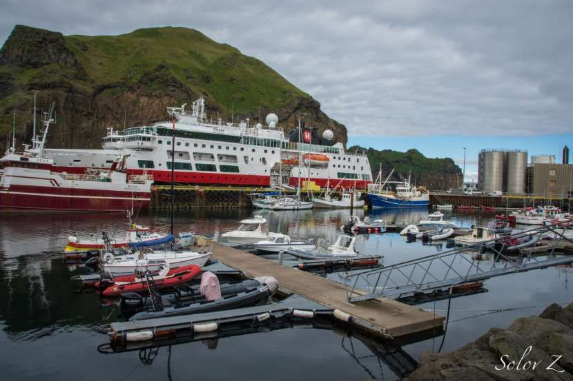 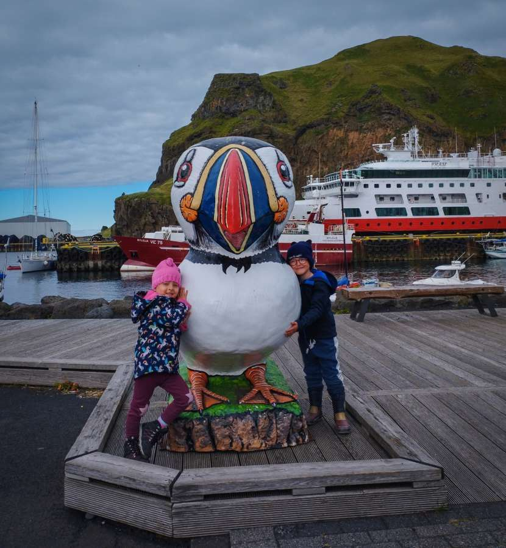
חזרנו ליבשת בשעה שש וחצי והחלטנו לנצל את היום היפה לבקר במפל סיליאלנדפוס הסמוך, מי יודע מתי יהיה שוב יום שמש באיסלנד, מחר כאמור סערה.
נסיעה קצרצרה ואנחנו במקום, כאן באמת היינו בהלם מהשינוי שעבר על המקום, גדודי תיירים, חניון ענקי, מתחם לחניית קראונים מלא מלא אנשים- והשעה יחסית מאוחרת. נזכרים בעצב בנוסטלגיה מהטיול הקודם בו ישנו בחניון הקטנטן שהיה אז וממנו לקחנו אוטובוס לתורסמורק שכבר לא עובר במקום…
מפל סיליאלנדפוס הוא מפל משגע והיופי שניתן ממש להכנס מאחוריו, עד כדי שהרחיבו את השביל וממש אפשר להקיפו, אולם כדאי להביא בגדים אטומים למים כי הרסס חזק והרצפה חלקלקה.
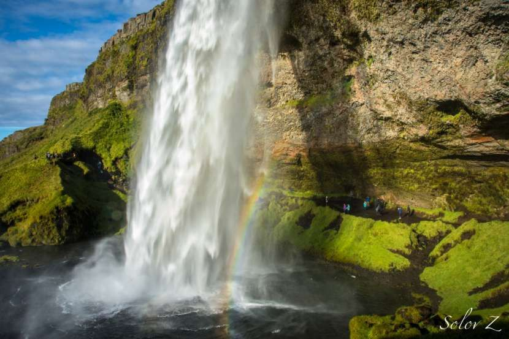
קשת מדהימה מקדמת את פנינו, הצוציקים בעננים, הרסס פשוט הנאה צרופה בשבילם, הקפנו את המפל, רטובים ומאושרים הצוציקים ובעלי חזרו לקראון להכין ארוחת ערב ואני המשכתי עוד 500 מטר לכיוון המפל השני והלא פחות מרשים- Gljufrabui, המפל נמצא בתוך נקיק ובכדי להגיע אליו צריך לצעוד בזהירות על גבי הסלעים אחרת שוחים בנחל… הרסס ממנו ממש חזק וחובה מעיל גשם אבל חוויה כיפית במיוחד. אין לי כלכך תמונה מוצלחת משם כי הכל נרטב.
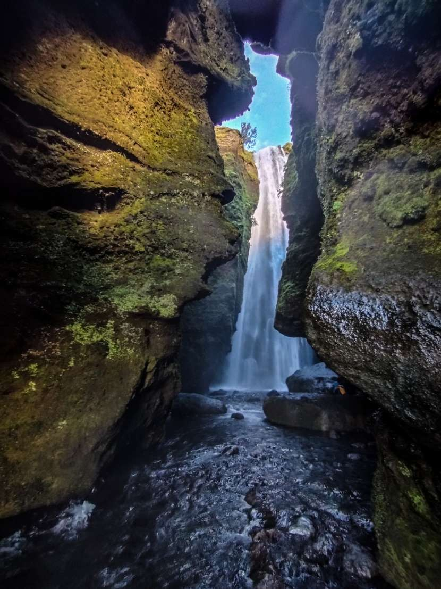
חזרתי לקראון, התלבטנו רבות לאן להמשיך מכאן, במקור תכננתי לישון בקמפינג בסקוגר, חצי שעה נסיעה משם, אבל לפי התחזית מחר יש אזהרת נסיעה לכל האיזור הדרומי, סופה ורוחות בעוצמה של 17 מטר לשניה, לכן החלטנו דווקא לנסוע לויק מתוך מחשבה שעדיף להיתקע בעיירה שיש מה לעשות, בערך, מאשר בקמפינג בלב הטבע. אחרי ארוחת ערב ומקלחת זריזה בקראון, מלבישים את הצוציקים בפיג'מות, מכינים קפה וקדימה לדרך. נסיעה של שעה וקצת בדרך משגעת ביופיה.
העיירה ויק היא המקום הכי קרוב לעיר באיזור הדרומי הזה, הקמפינג של ויק יחסית חדש וענקי, ב-2014 לא היה שם כלום, והנה נבנה מתחם קמפינג ענקי ומלא מלונותת סביבו. הקמפ ממוקם ממש סמוך לכנסיה המדהימה שצופה על ויק. בשעה שהגענו- עשר בלילה הקמפינג היה ממש מלא אבל עדיין היה מקום לחנות, התמקמנו במקום לא אסטרטגי אבל עם חשמל בעלות 4500 קרונות. ויתרנו על מקלחת בקמפ, סתם קר לצאת, יש שירותים ומקלחת בקראוון עצמו. עייפים ומרוצים פרשנו לישון.
יום 5 17.8.22- יום של סערה
אזהרת המסע ניתנה לא סתם, ובכלל לכל מי שמטייל באיסלנד חייב להכיר את האתר VEDUR, אתר תחזית מטאורולוגי שמראה גם התראות על רוחות, אורורה וכל מה שיכלתם לחשוב עליו באי הזה.
רוחות חזקות מטלטלות את הקראוון, גשם בלי הפסקה, אי אפשר באמת לטייל במזג אוויר כזה. חיפשנו מה ניתן לעשות בחלל סגור והנה המלצה מעולה- מופע הלבה של ויק, יש הופעה ב-11, ומיד אני מזמינה כרטיסים.
לקחנו את הבוקר באיזי, פנקייק לארוחת בוקר, סרט בטאבלט, מורחים את הזמן עד 11. נסיעה קצרצרה ואנחנו במקום. נכנסים לאולם קטן ובמרכזו יש מעין משפך, מקבלים משקפיים ומחכים בסבלנות. בחור צרפתי חמוד שלומד גיאולוגיה עושה את ההדרכה, בחדר יש מקום לכ-20 אנשים, קטן ואינטימי. בהתחלה הוא מספר לנו על הרי הגעש והמפורסם שבהם הוא הר הגעש קטלה, ב-1918 היתה התפרצות קטלנית של הקטלה, הסבא רבא של בעל המקום זכה לראותה והסיפור הוא כזה: בחודש ספטמבר החקלאים יוצאים לאסוף את הכבשים הרועות בשדות לקראת החורף, טקס זה נקרא רטיר. בזמן האיסוף הסבא רבא מתרחק מעט מהקבוצה ופתאום שומע רעש נורא, מסתכל מעלה ורואה עשן מיתמר מעל הקטלה, הוא צועק לחבריו מילה אחת "קטלה", ומיד הם עולים על סוסיהם ודוהרים חזרה לכיוון הכפר, אולם הנהר שהרגע חצו כבר עמוק מידי, עד שהם מגיעים לכפר אחרי יומיים הם מוצאים רק איי חורבות בכל מקום. אנחנו לומדים מה קורה כשמתפרץ הר געש שממוקם מתחת לקרחון- הסכנה העיקרית שלו היא שיטפון שמגיע במהירות מהמסת הקרח של הקרחון. גם הרי געש אלה נוטים לעשות הרבה עשן בגלל המסת המים וזאת בניגוד להר געש הקלה למשל שמוציא לבה ואפר.
אנחנו למדים גם שאם הקטלה תתפרץ אז כל מי שנמצא בסביבה יקבל התראה לנייד ויש להגיע מיד לנקודה הגבוהה שהיא החניה של הכנסיה ולחכות שם להנחיות, למזלנו הקטלה לא מתפרצת בזמן שהותינו באיסלנד. לאחר ההסברים המדריך מזרים לבה אמיתית ורותחת, מה שהם עושים הם מבקעים את החול וסלעי הבזלת שהם הרי בעצמם שדירי התפרצות הקטלה- זה למה החוף בסביבה הוא שחור. פתאום נהיה ממש חם ככל שהלבה זורמת, הידעתם, שלבה אדומה היא בטמפרטורה מעל 600 מעלות צלסיוס ושחורה מתחת ל-600, זה לא אומר שלבה שחורה לא חמה. בגלל שהכל מבוקר הלבה גם מתקררת מהר וממש רואים איך נוצרות מערות לבה- זה נועד בעיקר להסביר לאנשים מדוע לא דורכים על לבה טרייה, גם לבה בת שנה היא טריה, כי מעבר לזה שיכולים להיות מקומות חמים ייתכנו גם מקומות שהלבה שיכולות לקרוס פנימה.
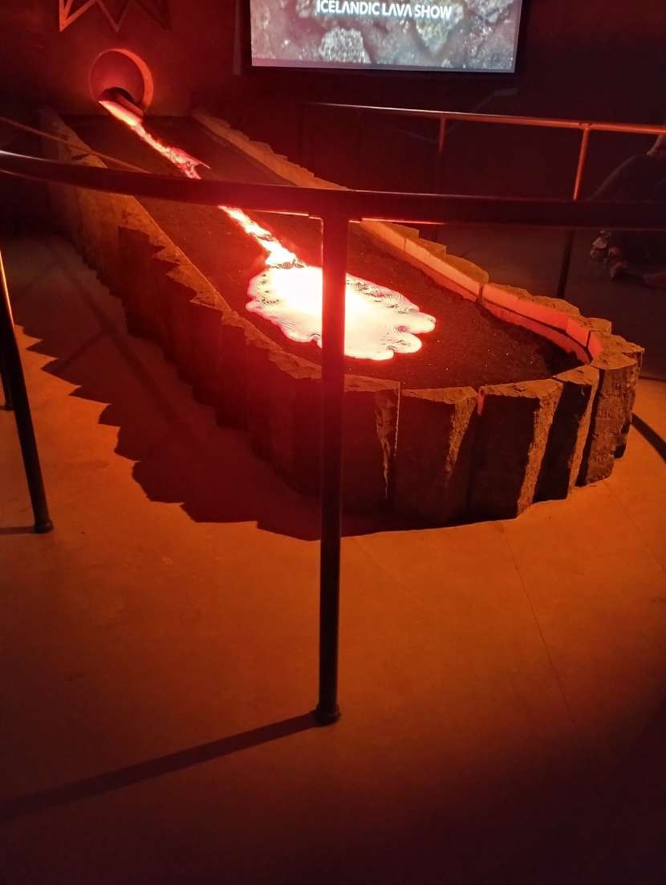
הקטנים שלנו עדיין לא מבינים אנגלית אז אנחנו מסבירים להם את הכל, עד היום הילד מסביר לי על הקטלה ועל ההבדל בין הר געש על קרחון להר געש רגיל- רק בשביל זה היה שווה להגיע לאיסלנד.
אורך המופע כשעה, ובסיומו אנחנו מתיישבים במסעדה שבמקום לאכול מרק לבה. מדובר במסעדת ה-THE SOUP COMPANY, יש תפריט מרקים עשיר, יש ריפיל על מרקים אבל גולת הכותרת ומנת הדגל זה מרק הלבה, מרק עגבניות אדום שמוגש בלחם לבה שחור ואו איזה טעים. במזג אויר כזה אין כמו מרק לצהריים.
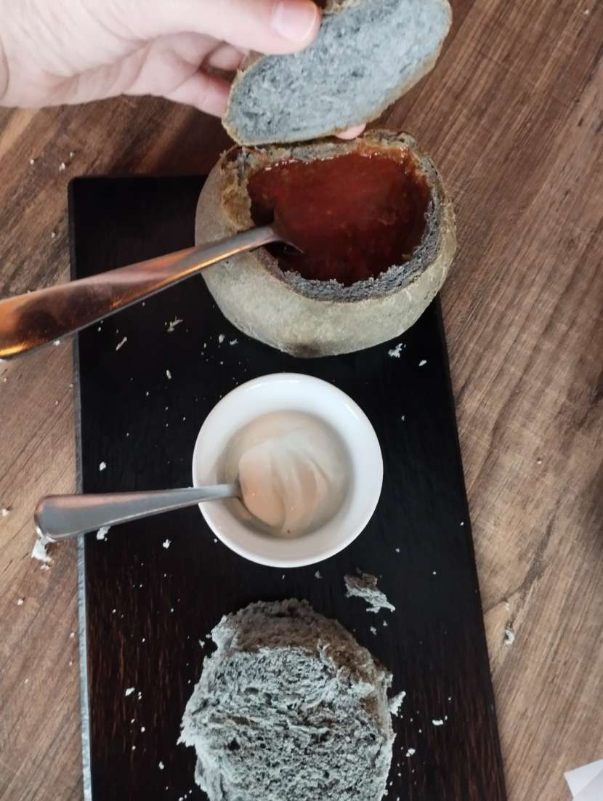
משם קפצנו לתצפית על הכנסיה אבל לא ראינו כלום בגשם, השעה אחת בצהרים, לפי התחזית הסופה נרגעת רק לקראת חמש, מה עושים עכשיו? זה הזמן לבדוק את הבריכות המקומיות, כמו שכתבתי קודם בכל כפר קטנטן ככל שיהיה יש בריכה קהילתית.
מודל הבריכות פשוט וזהה בכל מקום- יש כמה בריכות HOT POT בטמפרטורות הנעות בין 38-42 מעלות, יש בריכת פעוטות בטמפ של 34-36 מעלות ובריכה אולימפית בטמפ של 28-30 מעלות. לרוב יש גם מגלשה לילדים. בכניסה למתחם יש להוריד נעליים, משלמים רק מגיל 6 ככה שיצא ששילמנו רק על שניים והמחיר נע בין 900 ל-1100 קרון לאדם. כאמור מורידים נעליים, תולים מעילים ונכנסים למלתחות, שימו לב באיסלנד חובה להתקלח טרם הכניסה לבריכה, ללא בגד ים, הם נורא מקפידים על זה בעיקר בכדי שלא להוסיף כלור לבריכות ולשמור על נקיון. בכל בריכה יש לוקרים לציוד, אחרי מקלחת סטייל צבא אבל עם מים רותחים ונעימים, שמים בגד ים ורצים לבריכה, ממליצה לא להיכנס ישר לאולימפית כי קפוא, אז התחלנו בפעוטות, בהתחלה הגשם מפריע אבל אחרי כמה דקות כלכך נעים וחמים ששום מים כבר לא מפריעים, גם לא הרוח. הצוציקים אימצו את המגלשה, אנחנו את ה-HOT POT, וככה העברנו שעתיים בכיף וחסכנו מקלחת קראון בערב…מהיום ערב בבריכה הפך להיות מסורת בטיול.
אגב אסור לצלם בבריכות האלה ככה שלא תראו תמונות, אבל תסמכו עלי זה שווה, במיוחד עם ילדים. בכל בריכה יש גם ארגז מצופים, צעצועים משקפות ומה לא, שניתן לקחת חופשי ולהחזיר לאחר מכן.
השעה ארבע, הסופה נחלשת, החלטנו לבלות עוד לילה בקמפ בויק ולטייל בעיירה, או יותר נכון ללכת למרכז המסחרי בכדי לקנות מתנות. חנינו בקמפינג התמקמנו הפעם במקום טוב יותר, הסופה נחלשה ואפילו מידי פעם השמש מבצבצת, הלכנו ברגל למרכזון המסחרי כי זה ממש מעבר לכביש, במקום יש קפיטריה, סופר וחנות של ICEWEAR שזו רשת של בגדי טיולים וכמובן גם מלא מזכרות. אחרי סיבוב שופינג מוצלח ועצירה לקפה ומאפה המשכנו בטיול הרגלי כיוון החוף השחור, מזג האויר קריר ונעים כבר אין רוח, ריח הים אחרי הסופה והגלים העדינים ממש מרגיעים, הצוציקים משחקים בחוף, ממש נהנים מהחול השחור, קנינו להם כובעי ויקינגים אז הם בכלל שקועים במשחק ואנחנו נהנים מהשלווה והנוף היפיפה.
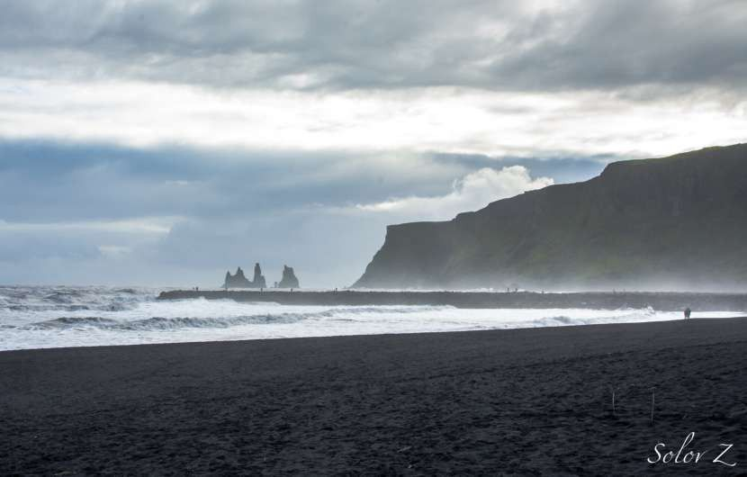 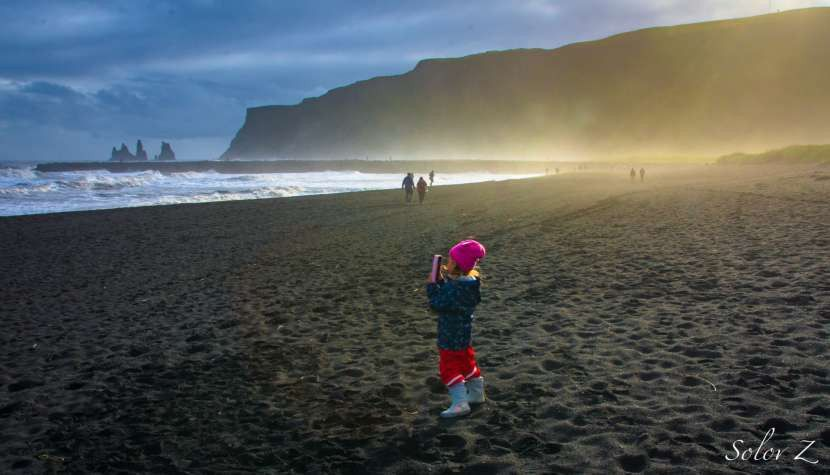 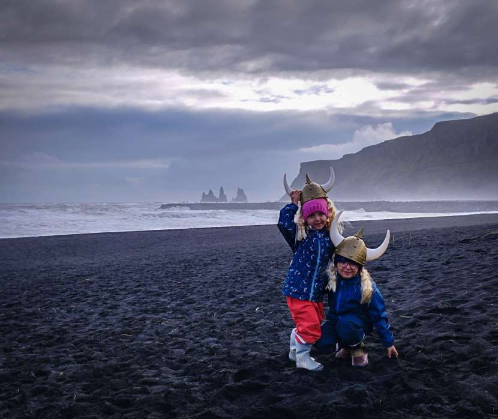 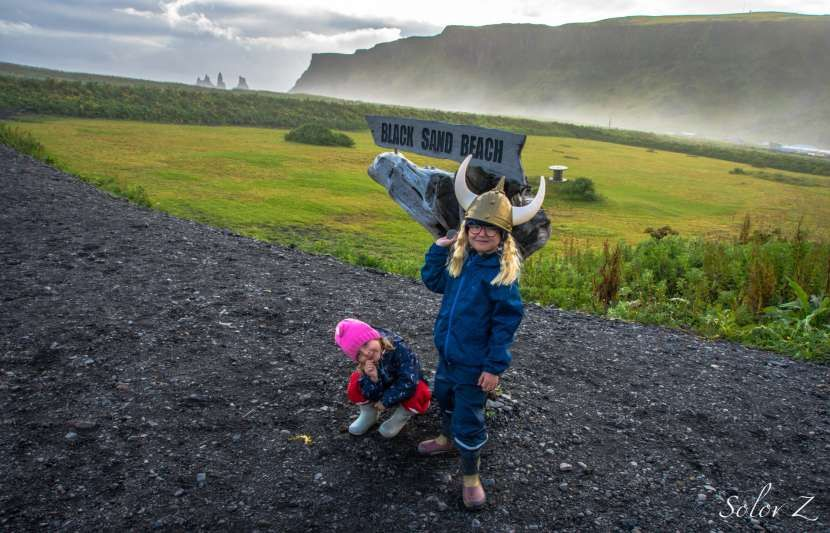
היום בפעם הראשונה יש סיכוי לראות את הזוהר הצפוני אולם עם כיסוי העננים שצפוי פה בויק הסיכוי ממש קלוש, כיונתי שעון לאמצע הלילה וכשהתעוררתי והצצתי החוצה היה יותר מידי עננים, כך היה כל לילה ככה שלצערי הרב לא ראינו זוהר, אולי בפעם הבאה, איכשהו תמיד היינו במקום בו היו עננים ודוקא באותו הזמן במקום אחר באיסלנד היה זוהר יפיפה, לצערנו אנחנו חסרי מזל עם האורורה.
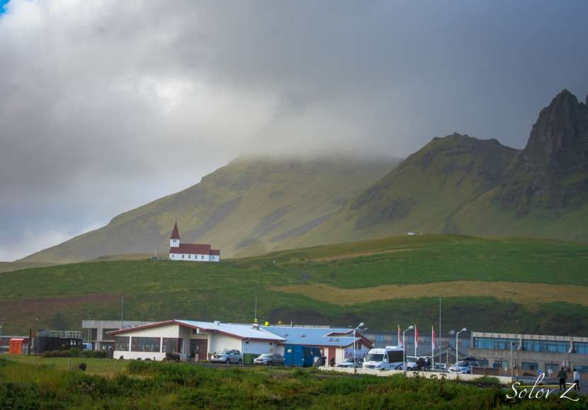
יום 6 ה-18.8.22- שדות לבה
קמנו ליום סגרירי, הסופה נגמרה אבל עדיין קר ומעת לעת מטפטף. אנחנו ממשיכים בתוכנית הטיול שלנו כשהיעד להיום הוא העיירה הקטנה עם השם הארוך ביותר- Kirkjubæjarklaustur, או בקיצור קירקי.
יצאנו לדרך, העצירה הראשונה היא שדה רוג'ומים ענקי- אולם בניגוד למה שזכרנו ב-2014, שדה ענק שנמשך עד האופק עם קרחון מירדאלסיוקול ברקע, הפעם גבעת הרוג'ומים קטנטנה ובגשם וברוח פחות נעים לטייל שם.
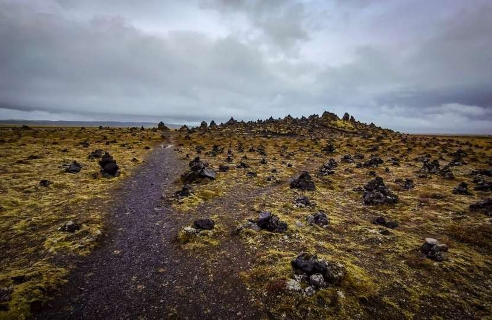
המשכנו הלאה, הנסיעה עוברת דרך שדות לבה ומדברי חול שחור, הכל תוצאה של התפרצויות הר הגעש קטלה, כמעט ואין ישובים בין ויק להופן בגלל הרי הגעש הרבים ששוכנים בקרחון ואטנאיוקול וגם הקטלה ששוכן תחת מירדאלסיוקול, כך שבממוצע מתפרץ שם הר געש כלשהו כל 5 שנים.
העצירה הבאה היא שדה לבה שהאיסלנדים חובבי הטבע גידרו ותחמו בכדי שהתיירים יטיילו במסלול מסודר ולא יהרסו את הטבע, האזוב שצומח על שדות הלבה חיוני מאוד למערכת האקולוגית של האי. מדובר במסלול קצרצר סביב גושי הלבה לאן של תביטו תראו לבה וגבעות אפורות ירוקות.
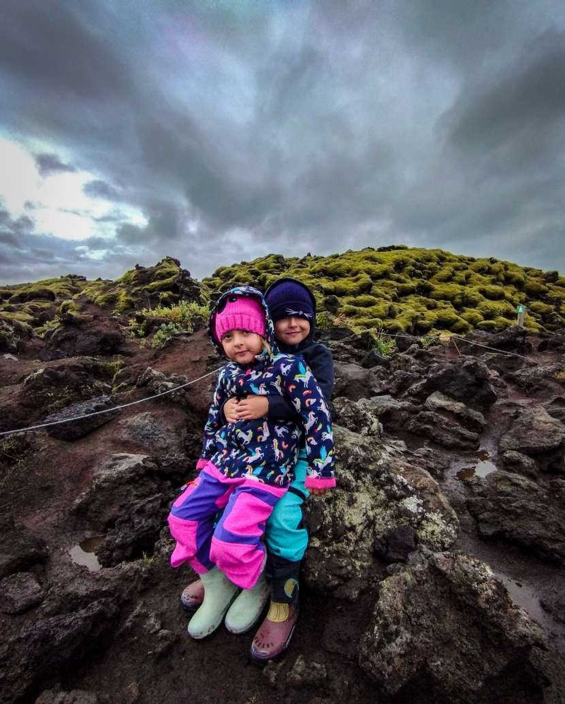
משם אנחנו ממשיכים לקניון Fjaðrárgljúfur, מדובר בקניון משגע פשוט אין מילים לתאר את היופי שלו, וכאן לצערי ממש חוינו אכזבה מהפיתוח התיירותי שחל על איסלנד, אולי זה נשמע בכייני שכל הזמן אנחנו משווים לטיול הקודם אבל ההבדל כלכך צורם, ביוני 2014 הקניון היה פתוח לרווחה, ניתן היה לסייר למטה לצד הנהר ולמעלה, לטפס על כל גבעה להגיע לכל צוק, היינו לבד, כביש עפר משובש הוביל לשם. היום אנחנו מגיעים וחשכו עינינו, החניון מפוצץ, אנשים מחנים רכבים בצידי הדרך, האתר נראה כמו מוקד עליה לרגל של מכה, בקושי רב מצאנו פינה קטנה להחנות את ההקראון, מאוד התלבטנו אם לשמור את המסלול למחר אבל באיסלנד מי יודע מה יהיה בעוד שעה מבחינת מזג אויר אם לא יורד גשם עדיף לצאת לטיול כי בעוד שעה כנראה יהיה גשום.
גם הפעם מצטיידים בשוחד לילדים ויוצאים לדרך. כפי שכתבתי, כבר לא ניתן לרדת למטה לנהר אלא רק לעלות מעלה לאורך הקניון, השביל מגודר היטב ואין שום אפשרות לסטות, הם עשו זאת בעיקר בגלל שלאחר שג'סטין ביבר צילם שם קליפ, כמות התיירים שהגיע למקום פשוט פגעה בטבע- דרכו רמסו והרסו, אפילו סגרו את האתר לכמה זמן בשביל לתת לטבע להתאושש וניצלו את הקורונה בכדי להקים גדרות ושבילים. מצד שני בנו נקודות תצפית במקומות אסטרטגיים כך שאל חשש הנוף נשאר מרשים.
הקוטר הקטן התעייף באמצע ולכן חזר עם בעלי לקראון בעוד שאני ופיצקית הגענו עד הסוף- הנקודה הגובהה ביותר והמפל המשגע, בנו שם במה צפה והתחושה כאילו אתם מהלכים מעל הקניון. מדובר בהליכה לא קשה בכלל בשיפוע מתון מאוד של כ-2 קמ. לקח לנו פחות משעה הלוך וחזור.
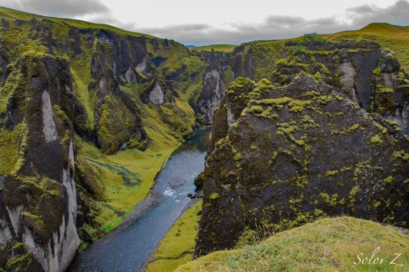 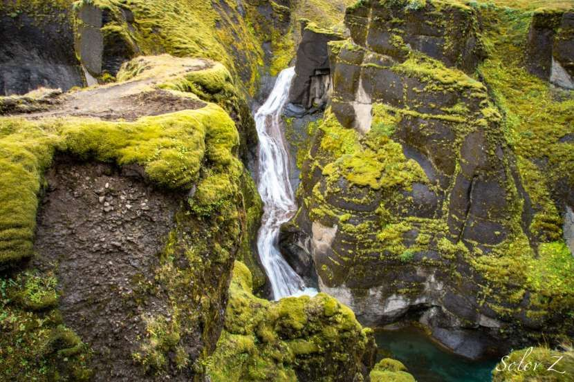
מרוב כמות התיירים במקום, השירותים הציבוריים שם נוראיים. הטיפ שלי- תגיעו ממש מוקדם או ממש מאוחר, אל תגיעו בצהריים כמונו סתם ייפגע בחוויה כשתצעדו עם מלא אנשים נוספים.
מכינים ארוחת צהריים זריזה בקראון, שוב מתחיל לטפטף, לכן החלטנו לבדוק את הבריכה המקומית של קירקי, הביקורות עליה בגוגל מהללות.
הבריכה של קריקרי בדיוק באותו הקונספט של הבריכה בויק- כולן אותו דבר, בריכה אולימפית, בריכת HOT POT ובריכת פעוטות, רק תוסיפו לזה את הנוף היפה של מפל האחיות. הבריכה ממורקת מניקיון. אנחנו מבלים שם שעתיים, ניחשתם נכון- אנחנו ב-40 מעלות והצוציקים מתרוצצים בין הבריכות ומתגלשים במגלשות.
מהבריכה נסענו ישר לקמפינג, היינו עייפים, מזג אויר סגרירי ומטפטף ולא התחשק לנו כלכך לראות עוד מפלים בסביבה, למרות שיש כמה לא רעים. התמקמנו בקמפינג החמוד של העיירה, כביסה כמובן, ארוחת ערב- טיפ קטן, ברוב החנויות מוכרים אוכל שהוא כבר מוכן ורק לחמם במיקרוגל, בכל קמפינג יש חדר בישול עם גז וכמובן מיקרוגל, אז לעצלנים מבינכם שלא בא לבשל האוכל המוכן זה פתרון נחמד לימים שלא בא לכם לצאת למסעדה. אכלנו, שיחקנו קצת במשחקי קופסא ולישון.
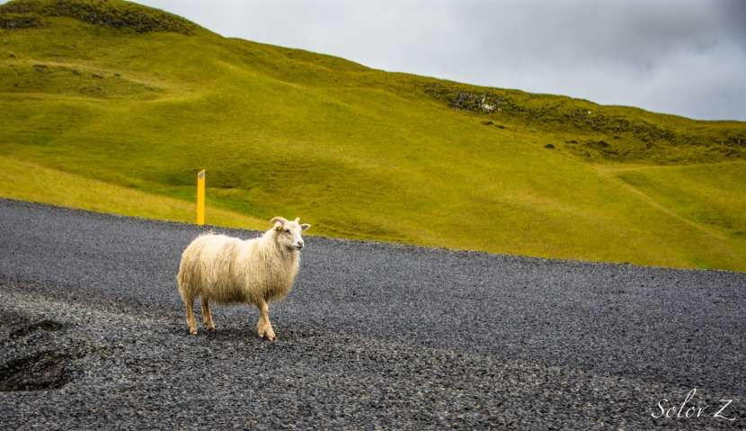
לפי התחזית גם היום יש סיכוי לזוהר צפוני ולקראת אחת בלילה העננים אמורים להתפזר, אז כמובן ששמתי שעון אם כי גם הלילה לא ראיתי זוהר, אולי פס מסכן של ירקרק שעד היום אני לא בטוחה אם זה ענן או זוהר חלש חלש.
יום
7
19.8.22- טבע
משגע
הסערה חלפה סופית, קמנו לבוקר שטוף שמש איזה כיף. התחלנו את הבוקר בגינת המשחקים הקטנה שליד הבריכה של קירקי, גם הצוציקים צריכים לפרוק קצת אנרגיה, כמה קפיצות בטרמפולינה, נדנדה וטיפוס על מתקנים ואנחנו מוכנים לתזוזה, עוד הצטיידות זריזה בסופר הכלכך יקר של קירקי ואנחנו יוצאים ליעד קרוב קרוב- מפל Stjórnarfoss, מדובר במפל קטן אולם יפיפה, לידו נמצא קמפינג חמוד אולם ללא חשמל.
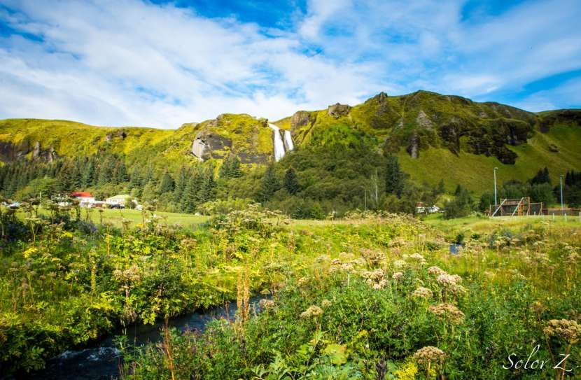
הליכה קצרצרה מהחניה ואנחנו שם, לבד לבד סוף סוף… מצטלמים בכיף, הצוציקים אפילו טובלים רגליים ועסוקים בזריקת אבנים לנחל, מקום פשוט תענוג, טיפ- אם מזג אויר יפה, תביאו לשם פינקינק וארוחת בוקר, המקום פשוט משגע.
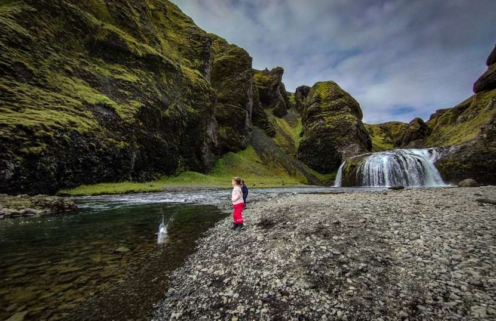 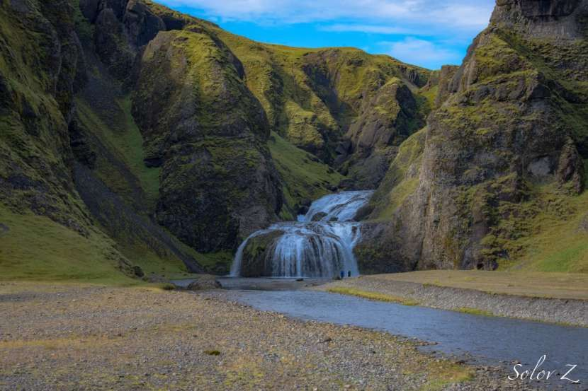 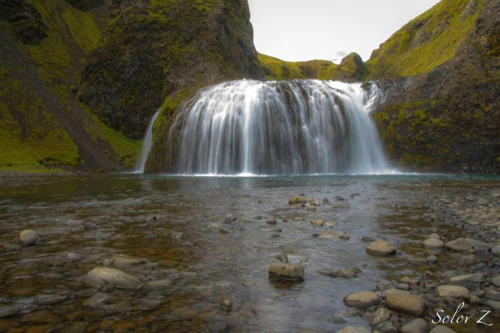
משם התחלנו בנסיעה לכיוון קרחון הואטניוקול- הקרחון הגדול ביותר באירופה. בדרך אליו אנחנו עושים עוד עצירה בצוקי הגמדים Dverghamrar, מדובר על מסלול חמוד וקליל שעוקף 2 נקודות של סלעי בזלת בתצורת משושים, לפי הפולקלור גרים שם גמדים, אבל לא ראינו אותם… בשלב מסויים השביל מוביל לנקודת צילום מושלמת בה אתם עומדים בין שני הצוקים ומפל סינדו באמצע.
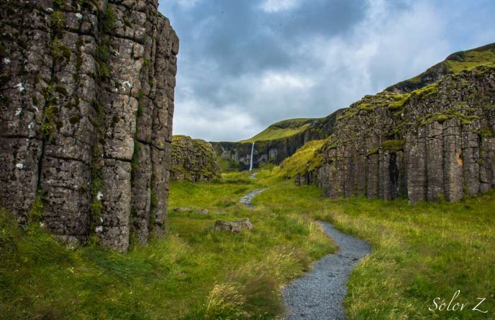
אחרי שבילינו את הבוקר בטיולי טבע המשכנו לכיוון הקרחון, היות ובשעה רבע לשלוש חייבים להגיע לנקודת המפגש לטיול בטרקטור לכף Ingólfshöfði.
מהר מאוד הדרך שלנו הופכת לשממה כאשר מתגלה מדבר סאנדור- מדבר שנוצר באחד מיני הרבה שטפונות שפוקדים את האיזור בעקבות התפרצות הרי געש שעל הקרחון. אחרון היה ב-2011, לפניו היה ב-1995 כזה שהחריב לגמרי את הכביש ואת הגשר שרואים את שרידיו באנדרטה חמודה לזכרו- הגשר כן…היום יום יפה ורואים את הקרחון במלא הדרו, מכל זווית צצה לה עוד לשון קרח, מראה מדהים.
הידעתם שלקרחון ואטניוקול יש 33 שלוחות ולכל אחת שם משלה.
אנחנו עוקפים את סקאפטפל וסבינפל ועוד שלוחות שאני לא זוכרת את שמם ומגיעים לנקודת המפגש שלנו לטיול. יש זמן להכין ארוחת צהריים ובשתיים וחצי אנחנו כבר מוכנים ומזומנים ליד הבקתה לטיול שלנו.
את הטיול הזמנתי עוד מהארץ, מפעיל הטיול בחור חמוד בשם איינר, צאצא למתיישבים הראשונים באי, מפעיל את הסיורים בטרקטור שלו- זה אגב השטח שלו אז נראה שממש נחמד לו שם. היינו לבד, טיול פרטי רק לארבעתנו, מזג אויר מדהים כבר אמרתי לא?
הטיול מתחיל בנסיעה של חצי שעה בעגלה רתומה לטרקטור דרך ביצות או יותר נכון מדובר בלשון ים החודרת לחוף ולכן ניתן לצאת לטיול בעיקר בשעות השפל. אנחנו מתפעלים מהנוף המדהים והטבע הבתולי, הצוציקים מתלהבים מהטרקטור.
אחרי נסיעה של כחצי שעה הגענו לכף, חוף שחור מי אוקיינוס וגבעה ענקית שצריך לטפס עליה, קטן עלינו, צ'יק צ'אק עלינו על הכף ואו איזה נוף, אין מילים לתאר את היופי הזה, טבע בתולי, סביבנו ציפורים וכבשים משוטטות, דשא ירוק ברקע הקרחון והכי כיף שאנחנו לבד לבד, הרעש היחיד ששומעים זה הרוח הציפורים והגלים פשוט מדהים.
איינר מספר לנו קצת על המקום- מדובר בנקודת ההתיישבות הראשונה של מתיישבי איסלנד, כלומר כאן עגן הויקינג אינגלפור ארנרסן הידוע כמתישב הקבע הראשון באיסלנד עם פמלייתו. הם בילו באיזור הכף כשנה עד שנעו לכיוון רייקויק והתיישבו שם. המקום מתואר כגן עדן מלא עצים, נוח למחיה, כלכך שונה ממה שאנחנו רואים היום והכל תוצאה של התפרצות הר הגעש אחד שנמצא על קרחון ואטניוקל שפשוט בשבוע אחד שינה את פני המקום לנצח, קודם הגיע שטפון עוצמתי ששטף את כל העצים ולאחר מכן שקע האפר והפך את החוף לשחור וחולי כמו שרואים היום.
המקום כיום משמש כשמורת טבע פרטית, המוני פאפינים רובצים על הצוקים שם אולם לצערנו לא ראינו אפילו אחד- הם כבר עזבו לים.
אנחנו מטיילים לאורך הצוקים, מציצים למחילות הפאפינים הריקות ופתאום אנחנו קולטים במים מתחת לצוק שאנו עומדים שוחה לויתן, והוא עוד עולה בכדי להוציא סילון מים, איזה מחזה מטורף. לצערי לא הצלחנו לראות איזה סוג לויתן זה ככל הנראה המינקי כי הם נפוצים בעונה זו ומתקרבים לחוף פעמים רבות.
אנחנו ממשיכים לטייל סביב האי, מתפעמים מהיופי של המקום, אינר מספר לנו שפה בסביבה חיה משפחת שועלים שפיתחה מנהג לאכול ביצים של ציפורים, ראינו איך גוזל קטן מנסה לעוף באמת אין לי מספיק מילים לתאר את היופי הזה, בעיקר כי היינו פשוט לבד.
הייתי נשארת שם עוד שעות אבל לצערי הקטנים די עייפים ומאבדים סבלנות אז אנחנו חוזרים לטרקטור. זוכרים את העליה לכף, אז עכשיו יורדים אותה ואיזה כיך זה לרוץ במורד גבעה חולית, כמעט ועלינו שוב רק בכדי לרדת בשנית- רצים כמו מטורפים ומתגלגלים בחול חוויה מטורפת.
אנחנו מודים לאיינר על סיור מושלם ויוצאים לכיוון הקמפינג שלנו בסקפטפל. אם יש קמפינג באיסלנד שמזכיר קמפינגים מערב אירופאיים זה המקום, מסודר מדוגם שילוט ברור איפה קראונים, איפה אוהלים איפה חשמל ואיפה לא, תענוג. שימו לב שעד השעה שמונה התשלום הוא בעמדת האינפורמיישן אולם לאחר שמונה בערב נפתחת עמדת תשלום בכניסה לקמפינג. כשאתם משלמים צריך לרשום גם את מספר הרכב באתר של השמורה בכדי שלא תחויבו פעמיים על הקמפ ועל החניה בשמורה כביקור רגיל.
אחרי ארוחת ערב מאולתרת אנחנו פורשים לישון אנחנו מותשים מיום שלם בטבע.
היום אין סיכוי לאורורה לפי התחזית והאמת אני פשוט עייפה מכדי לקום בלילה ולחפש.
יום 8 20.8.22- קרחונים
קמנו לבוקר סגרירי שלפי אתר VEDUR אמור להשתפר בהמשך היום. החלטנו לצאת לטיול לכיוון קרחון סקפטפל. כאמור, בשמורת סקפטפל יש שפע מסלולי הליכה, המפורסם שבהם הוא השביל למפל הסוורטיפוס ותצפית על הסוינסיפה- עשינו אותו ב-2014 היה מסלול נהדר של 7 קמ לא קשה לנו כלל. אולם הקטנים מתחילים לפתח מה שאני קוראת לו "עייפות טיולים", לא בא להם כלום, אז נראה לי שעוד מסלול של 7 קמ לא ממש יעשה להם טוב ובטח לו לנו, לכן בחרתי במסלול הכי קליל בשמורה- הליכה מישורית של 2 קמ עד לתצפית על הקרחון וחזרה.
ההליכה נחמדה אם כי לא מרשימה כלכך, הצוציקים אחרי מסכת קיטורים אינסופית סוף סוף מצאו עניין בלחפש פטריות לצידי הדרך, ויש הרבה, הגענו עד לתצפית על הקרחון המרשים אם כי זה לא המקום הכי טוב להתרשם מקרחון אבל זה בהחלט מסלול קליל ונחמד לבוקר סגרירי בכדי להתעורר ולהמריץ את הגוף.
בתום המסלול עוצרים לקפה ומאפה בקפיטריה- פחות מומלץ, ומשם יוצאים למקום שהוא בעיני הכי יפה בעולם- יוקוסלרון שהיא לגונת הקרחונים.
טרם ההגעה ללגונה יש גם את הלגונה הקטנה (Fjallsárlón), ביקרנו בה פעם שעברה ורציתי לבקר בה שנית אולם היה יום יפה ולכן החלטנו לבלות יותר זמן דווקא בלגונה הגדולה ובחוף היהלומים.
שוב חזרנו לצפיפות התיירים, המון רכבים על הכביש והנה פתאום מופיע הגשר ומצידו השמאלי מתגלה לה הלגונה. גם המקום הזה השתנה מאוד. ב-2014 הגענו לשם בשעות הערב המאוחרות בכדי לישון חניה יבשה, טיילנו בשקיעה, שמענו את צרחות שחפיות הקוטב שקיננו ממש מאחורי הביתנים של חברות השיט, היום לא ניתן היה להכנס לחניה מרוב רכבים, נסענו לחניה השניה שהקימו מצידו השני של הגשר לכיוון החוף, שם לפחות יש חניה גדולה ומתאימה לקראונים במקום הצפיפות בחניה הקרובה.
מרוב התרגשות לא שמנו לב לשעה ולא ראינו שכבר שעת צהריים- טעות, יוצאים לטייל עם שני צוציקים עצבניים בטירוף, חטפנו שקית חטיפים וקיווינו שיהיה אוכל ליד הלגונה. מתחילים לצעוד מתחת לגשר, קרחוני ענק צפים להם בנחת לים, מזג האויר התבהר, שמים כחולים ושמש שמציצה מעת לעת, פתאום אנחנו רואים כלב ים שוחה להנאתו בין הקרחונים.
סביב הלגונה בנו ספסלי עץ, אנחנו מוצאים לנו ספסל, מתמקמים בנחת לצפות בנוף. הזמנתי שיט לשעה ארבע השעה עכשיו אחת, אין בעיה להקדים את השיט, רק צריך ללכת לקופות שיגידו לאיזה שעה יש מקום פנוי- היה לשעה שתיים, מצויין. אין ממש חנויות אוכל ליד הלגונה אבל יש דוכנים, לצערי נגמרו הנקניקיות ונשארו רק מרקים. לקחתי מרקים בתקווה שהטרור יאכלו קצת ללא הרבה הצלחה לצערי. בסוף אחרי קופסת פרינגלס השתפר מצב הרוח של הטרור והם חזרו להיות צוציקים. לקראת שתיים הלכנו בין גדודי התיירים לתפוס את מקומנו בשיט. יש שני סוגי שייט בלגונה- אמפיבי, שאנחנו לקחנו, וסירת ריב שלצערי ניתן עם ילדים רק מגיל 8. עלינו על הסירה שנוסעת על גלגלים עד הלגונה ואז שטה, קיבלנו אפוד הצלה והתיישבנו להקשיב להסבר של המדריכה שלא ממש שמעו בגלל רעש המנוע.
נכנסנו למים והופ דממה, אנחנו שטים בין קרחונים ענקיים, בני עשרות אלפי שנים, חלקם מכוסים באפר ולקני והם שחורים. מהמדריכה אנחנו לומדים שהגלונה גדלה בכל שנה והקרחון מתכווץ בגלל ההתחממות הגלובאלית. הלגונה נוצרה אי שם בשנת 1950 ומאז רק גדלה. הלגונה היא האגם הכי עמוק באיסלנד, יש בה אוכלוסייה של כ-200 כלבי ים שהלגונה בשבילם היא גן עדן היות ואף טורף אחר כמו לויתנים לא יכולים להיכנס אליה.
משך השיט כארבעים וחמש דקות, הצוציקים ממש מאושרים ועוד נותנים להם להחזיק קרחון ביד. לסיכום אם אתם עם ילדים קטנים השייט ממש נחמד אבל בתנאי שיש מזג אויר יפה, אחרת לא הייתי טורחת, הנוף יפה מהחוף בדיוק כמו שהוא יפה מהמים.
אחרי השיט ירדנו קצת לשפת הלגונה, הקטנים נהנו לזרוק אבנים לתוכה ולצפות בסירות ריב המשייטות במהירות בין הקרחונים.
משם המשכנו לחוף היהלומים, זה בעצם כינוי לחוף בו נשטפים הקרחונים אל הים. בזמן שבעלי הכין צהריים- לדבריו ראה כבר מספיק קרחונים להיום, אני והצוציקים הלכנו לטייל בחוף, אנחנו עוד לא מיצינו את הקרחונים. כמה כיף היה לנו, הקטנים קפצו על קרחונים, שיחקו איתם, זרקו למים, שברו ומה לא, יש משהו כיפי בלשחק עם קרח ועוד כזה גדול.
אחרי שכולנו מיצינו את הקרחונים ואכלנו ארוחת צהריים מאוחרת ממש, שמנו פעמינו ליעד הסופי להיום- עיירת הנמל הופן. היות ואין קמפינגים ליד הלגונה צריך לישון או ליד סקפטפל- היינו אתמול, או בהופן.
התחלנו בנסיעה, גשם מעורב עם שמש יצר מחזות מדהימים של קשתות, מסביב נוף איסלנדי של חוף ים שחור מצד ימין והרים מצד שמאל, המון סוסים וכבשים. העיירה הופן היא בעצם נקודת הכניסה לפיורדים המזרחיים שאליהם לא נגיע בטיול הזה, מהופן אנחנו מתכננים לחזור חזרה לאורך החוף הדרומי לכיוון ריקוויק אבל יש לנו עוד יום בהופן לנצל לפני החזרה.
הגענו להופן בשעה שבע בערב, הבריכה עובדת עד שמונה למה שלא ננצל את השעה לפעילות כיפית לילדים. הבריכה בהופן היא הכי הכי שווה שהיינו בה בטיול, היא גדולה, יש שם 3 מגלשות- שתיים לגדולים ואחת לקטנים, בריכת הפעוטות מצוידת בכל טוב, הצוצקיים מאושרים. שוב חסכנו מקלחת קראון.
בביקורנו הקודם בהופן לא ראינו כלום למעט עננים גשם וערפל, עד כדי כך שלא הוצאנו את האף מהקראוון, הפעם החלטנו לפצות את עצמנו על זה ולטייל בעיירה.
נסענו לכיוון הנמל וחנינו שם, איך שיצאנו מהקראון ראינו את הנוף המטורף- ענני סערה מצד אחד, שמש שוקעת מצד שני שמאירה את העננים בדרמטיות וכמובן קשת בענן, ואו אין מילים.
אנחנו גוועים ברעב והחלטנו לנסות את אחת המסעדות הטובות ביותר באיזור- Pakkhús מסעדה שמתמחה בלובסטרים שהרי הופן היא בירת הלובסטרים. לא ניתן להזמין מקום במסעדה, מגיעים נרשמים מקבלים מכשיר איתות וכשמגיע תורכם הוא מצפצף, חיכינו כרבע שעה והמכשיר צפצף, התיישבנו לאכול. האוכל טעים מאוד והקינוח בצורת הר געש פשוט מעולה אולם הילדים שפוכים כבר נרדמים על הכיסאות.
נסיעה של 5 דקות והגענו לקמפינג של העיירה, שטח ענקי, נוף מדהים על הפיורדים והקרחונים שסביבנו. הילדים נרדמים מיד ויש לנו קצת זמן לנשום אוויר, אני יוצאת לצלם קצת את ההרים ברקע.
הלילה אין סיכוי לאורורה ולכן הלכנו לישון, איזה אכזבה חיכתה לי בבוקר כשראיתי שהזוהר נצפה ממש בסמוך למקום הזה ואם רק הייתי ערה בשתיים בלילה הייתי רואה אותו, טוב נו לא באנו לאיסלנד בשביל הזוהר אבל עדיין אני חשה החמצה, גילוי נאות- ראיתי את הזוהר בטיול בלפלנד, אבל עדיין ממש רציתי לראות אותו שוב.
יום 9 21.8.22- ווסטנהורן
קמנו לעוד יום שמש יפיפה באיסלנד, זה ממש מפתיע בטיול הקודם היו לנו אולי 3 ימי שמש מתוך 17, כבר שברנו שיא. כמובן שהתחלתי את הבוקר בסיבוב תמונות סביב הקמפינג.
התכנון להיום זה לבקר בווסטנהורן, בריכה ואז נראה אם נתחיל נסיעה חזרה או שנישאר עד מחר.
הר הוסטנהורן הוא ההר הכי מצולם באיסלנד ולא בכדי, ההר פשוט מרשים, במיוחד כשמצלמים אותו משתקף במים.
על מנת להגיע לשם צריך לרדת מכביש 1 לכיוון שמורת סקלאנס, יש שילוט מאוד ברור, משם נסיעה קצרה בדרך עפר סבירה למדי- אפילו לקראון עד שמגיעים לויקינג קפה, מדובר באתר קמפינג ובית קפה. דרך העפר אגב ממש יפה וחולפת על פני דיונות של חול שחור, שדות דשא ירוק, קרחון ואטנאיוקול שנראה באופק, וכמובן שלא חסר גם סוסים וכבשים. כדי להיכנס לשמורה צריך לקנות כרטיס כניסה בעלות של 900 קרון לאדם, הילדים חינם, שימו לב שצריך לשלם על כניסה גם עבור מי שהולך ברגל כך שאין שום משמעות לא להתקרב עם הרכב. את הכרטיסים ניתן לקנות בויקינג קפה.
הר הוסטנהורן נמצא בשמורה שנקראת סקלאנס, יש שם גם חוף שחור משגע, מסלולי הליכה בשפע, ציפורים מכל מיני סוגים, תחנה מטאורולוגית שנראית כמו חללית, כפר ויקינגי נטוש, באמת מקום חביב, לא לוותר עליו.
התחלנו עם תצפית על הוסטנהורן, כדאי לתפוס זווית שבה ההר משתקף במים, זה יוצר מחזה מדהים, עוד יותר כדאי לצלם מהחניה הרחוקה יותר שם ההר נראה עוד יותר מרשים.
בדיעבד עדיף שהיינו מתחילים מהכפר הויקינגי- מהכניסה פונים שמאלה כי עד שהגענו לשם כבר לא היה איפה לשים את הרכב מרוב כמות אנשים ולכן ויתרנו עליו וחבל.
אנחנו ניצלנו את שעות הבוקר לשוטט בשמורה, התחלנו עם הר וסטנהורן, לילדים היה ממש כיף לקפוץ למים הרדודים של שעות השפל לכן כדאי להגיע עם נעליים אטומות למים, משם המשכנו במסלול לכיוון הים, טיילנו קצת על הסלעים, ראינו שחפים חלפנו על פני החללית- זו בעצם תחנה מטאורולוגית שהכניסה אליה אסורה למטיילים והיא מגודרת. אחרי שוטטות של כמה שעות בשמורה, שבאמת מרשימה ומדהימה החלטנו לעשות יום כיף לקטנים וללכת שוב לבריכה המדהימה של הופן. בדרך חזרה נתקלנו בשני סייחים חמודים ששיחקו כלכך יפה בדשא, אז עצרנו לכמה צילומים.
צריך גם להצטייד בקניות, בעיירה הופן מצאנו סופר NETTO חביב למדי עם מבחר לא רע אם כי קצת יקר, הצוציקים גם קיבלו בובות של פאפין- שליוו אותם בהמשך הטיול כמו חבר נאמן.
משם המשכנו לבריכה, יום ראשון היום אז הבריכה מלאה יותר אם כי לא מפוצצת כלל. הפעם אנחנו מנסים את המגלשות של הגדולים, יש כחולה ואדומה, האדומה סגורה לגמרי ואתם מתגלשים בחושך, הקטני ממש אהב, אני פחות. המגלשה הכחולה והפתוחה היתה יותר חביבה בעיני. הקושי היחידה זה לצאת מהמים החמים בכדי לטפס למעלה להתחלה של המגלשה, אבל המים במגלשה עצמה חמים ונעימים כך שהחוויה לא נוראית בכלל, מהנה אפילו. בילינו במקום שעתיים וחצי עד שהצוציקים כבר התעייפו, שוב חסכנו מקלחת קראון.
נסענו לכיוון הנמל, חשבנו שנטייל קצת סביבו אבל התחילה רוח ממש חזקה ולא נעימה, הבנו את הרמז, נתחיל בנסיעה חזרה.
במקור הרי לא תכננו להקיף את האי כך שהופן היא הנקודה הרחוקה ביותר שלנו בטיול ומשם אנחנו חוזרים לכיוון רייקויק, מצד אחד קצת מבאס לחזור באותה הדרך מצד שני אפשר להשלים נקודות שפספסנו קודם בגלל מזג האויר או חוסר זמן.
עצרנו בתחנת דלק N1, להצטייד ונשנשנו המבורגרים סבירים למידי, הלבשנו את הצוציקים בפיג'מות והתחלנו בנסיעה לכיוון סקפטפל, השעה מאוחרת, נסיעה עד קירקי היתה לוקחת לנו שעתיים ומשהו אז העדפנו בכל זאת לישון בסקפטפל.
מזג האויר השמשי הסתיים, גשם מתחיל לרדת, נהיה סגרירי ומרדים, בצער רב ויתרנו על עצירה בלגונת הקרחונים הקטנה, וכך לאט לאט נהנים מהדרך הגענו לסקפטפל, אותו קמפינג שישנו שם לפני יומיים, בגלל שהגענו אחרי שמונה התשלום בכניסה של הקמפינגים, מתמקמים ולילה טוב.
יום 10 22.8.22- הדרך חזרה
היום יום סגרירי וגשום, דווקא יצא טוב שאת רוב היום נבלה בדרכים. היות שכבר טיילנו בסקפטפל, ובמזג האויר הזה אין סיכוי שנעשה עוד מסלול בסביבה אנחנו לא מבזבזים זמן ויוצאים לדרך לכיוון קירקי.
במקור נורא רציתי לישון לילה בקמפינג של ת'אקגיל- כביש 214 ליד ויק שנכנס פנימה לשמורת הר הגעש קטלה, הכביש הוא עפר ובקיץ עביר לכל הרכבים- וידאתי זאת מול הקמפינג, אולם במזג אויר כלכך סגרירי נראה לי קצת מיותר לנסוע 21 קמ לכיוון בכביש עפר, נשאיר גם את זה לפעם הבאה.
אמרנו שאם נרצה נעצור בקיקרי לסיבוב באיזה מפל או בריכה, כשהגענו לשם אחרי שעה וחצי היה גשם זלעפות כך שעצרנו בתחנת הדלק לקפה והמשכנו לכיון ויק.
בשעה 12 הגענו לויק, עדיין סגרירי בחוץ אך אין גשם, החלטנו לטייל קצת בחוף השחור של ויק- זה שצמוד לעמודי הסלע Reynisdrangar. מדובר בחוף שחור שצמוד להר עליו מקננות המוני ציפורים, בכלל המקום נראה כאילו לקוח מסרט פארק היורה, עוד רגע ויופיע פה איזה דינוזאור.
האגדה אומרת שעמודי Reynisdrangar הם בעצם טרולים, שכאשר גררו ספינה, יצאה השמש והפכה אותם לאבן, הצוציקים נורא אהבו את הסיפור הזה, ומאז שם המקום שונה לחוף הטרולים.
להפתעתי הצוציקים ממש אהבנו את החוף, שיחקו בחול, טבלו את מקלות ההליכה במים, בשלב מסויים זיהינו פאפינים שוחים בים, כמה אושר היה לצוציקים לראות את התקריב שלהם דרך המצלמה.
בניגוד לחוף Reynisfjara הנמצא מעבר לצוק (לא ניתן להגיע אליו ברגל משם אלא אם תטפסו על הצוק ותרדו בצד השני, ברכב מדובר בסיבוב של רבע שעה), החוף בויק אינו מסוכן ואין גלים חמקנים מסוכנים ממש כמו בחוף ההוא, לכן אפשר לתת לילדים לשחק בנחת ליד המים במיוחד כשאין גלים.
אחרי שעה וקצת מיצינו את הכיף בים, עברנו שוב בכנסיה המפורסמת של ויק כדי לתצפת על הנוף, הפעם בניגוד לשבוע שעבר כשהיינו פה, ראינו את הנוף.
מורעבים החלטנו לעצור בפיצריה שראינו בדרך- BLACK CRUST PIZZA ההמלצות עליה בגוגל טובות ולא בא לנו להתחיל ריב עם הילדים על אוכל, פיצה תמיד הולך. הזמנו לילדים פיצה רגיל ולנו פיצה מס' 5- פיצה שחורה עם גבינות וריבה, WOW זו הפיצה הכי טעימה שאכלנו אי פעם, או שהיינו כלכך רעבים, אבל באותו הרגע הטעם שלה היה פשוט אלוהי, ממליצה לכולם לעצור שם ולטעום את פיצה מס' 5, אפילו רק מלכתוב את זה אני שוב מזילה ריר.
שבעים ומרוצים החלטנו לנסוע לחוף היפיפה אך המאוד מסוכן-Reynisfjara, רק השנה נהרגו 2 תיירים שנסחפו לים עם הגלים, שימו לב במקום לא סתם יש שלטי אזהרה, הגלים שם מסוכנים, הם מכונים SNEAKER WAVES אלה גלים קטנים ולכאורה לא מאיימים אבל כמה מהם מצטברים לגל חזק שמגיע ממש רחוק ובדרכו סוחף אנשים לים, הזרם כלכך חזק שאם נסחפת לים זהו, אין סיכוי לצאת בחיים, רק בחודש יוני האחרון תיירת סינית נסחפה לים ומתה, בתחילת השנה היה גם תייר גרמני, החוף יפיפה וכדאי ללכת לראות אבל להתרחק מהמים ולא לחשוב שלי זה לא יקרה.
כשאנחנו הגענו לשם המקום כלכך המה תיירים שלא היה אפילו היכן לחנות את הקראון, יצאתי לבד לגיחה זריזה והאמת טוב שלא עצרנו, מרוב תיירים לא רואים את היופי של החוף, זה נראה כמו ים נמלים מטפסות על תל, שהוא מנהרת משושים יפיפיה, באמת אל תגיעו בשעות הצהריים חבל.
משם רציתי לנסוע לדירהולי אבל הבעל והצוציקים הטילו וטו, טוב נו, את דירהולי כבר ראינו קודם ב-2014, מקסימום בפעם השלישית…
בדרך חזרה עצרנו לצילום של כניסה פוטוגנית במיוחד
המשכנו ישירות לקמפינג של סקוגר. מדובר בקמפינג בסיסי וחביב ממש צמוד למפל, המשמש גם כחניה לבאי המפל, לידו יש גם מסעדה שמעולם לא ניסינו אותה, אומרים שהיא נחמדה. הגענו למקום בשעה חמש, עדיין היו גדודי תיירים אם כי פחות, חנינו, התחברנו לחשמל, עמדת התשלום על הקמפינג נפתחת בשבע בערב בינתיים ניצלנו את בזמן לטייל למפל.
אין ספק שסקוגר הוא אחד המפלים היפים והעוצמתיים בחוף הדרומי של איסלנד, אי אפשר להתקרב אליו מבלי להירטב לגמרי, אחרי כמה תמונות וזריקת אבנים למים מצד הצוציקים התחיל לרדת גשם אז חזרנו לקראון לארוחת ערב ומקלחת.
כשהילדים נרדמו מזג האוויר התבהר, הוצאנו סוף סוף את כסאות הקמפינג מהקראון והתיישבנו בחוץ לצפיה נינוחה במפל. בשעה תשע בערב כבר היו מעט אנשים ואני ניצלתי את הזמן ללכת ולצלם קצת כמו שצריך.
אנחנו יושבים בכיף, פתאום שומעים אבא אבא, הייתי בטוחה שהילד התעורר, וכך גילינו שהקראון שחונה לידינו זו גם משפחה ישראלית, עם ילדים בגילאים של הצוציקים, קבענו לפליי דייט למחר בצהריים.
הלילה ממש קיוויתי לראות את הזוהר, אולם אין לי מזל, שמיים נקיים אך לא הופיע שום דבר לצערי.
יום 11 23.8.22- מפלים מפלים ועוד מפלים
קמנו לבוקר שמש, שמיים כחולים, מצפה לנו היום יום חמים נעים וכיפי. אחרי ארוחת בוקר אנחנו מנצלים את מיעוט התיירים היחסי לעשות כמה תמונות משפחתיות יפות ליד המפל ומשם אנחנו הולכים לטרק המפלים- Fimmvorduhals Trailhead, מדובר בשביל בין סקוגר לתורסמורק, רבים עושים אותו כחלק מסיום טרק הלנדמנלוגאר אבל אפשר לעשות גם כטרק יומי להגיע לתורסמורק ולתפוס אוטובוס משם, או כמו שרבים אחרים עושים- ללכת עד שנמאס ואז לחזור.
השביל מתחיל בעליה של כ-460 מדרגות לתצפית מעל מפל סקוגר ומשם הופך לשביל בעליה מתונה שעובר לאורך 26 מפלים שונים.
איך גורמים לבני 4 וחצי לעלות כלכך הרבה מדרגות- שוחד והרבה… כרגיל מילאנו את כיסי המכנסיים בכל טוב ואת התיקים בחטיפים, סיכמנו שבכל 50 מדרגות הם יכולו לעצור לנשנוש קטן, ואו זה עבד פלאים, עלו למופת את כל המדרגות.
מלמעלה זכינו לראות את הקשת המפורסמת של מפל סקוגר שמופיעה רק בימי שמש, משם הנוף המטורף לכיוון הים מצד אחד ומאחרינו הר הגעש אייפיאטלאיוקול.
מתחילים ללכת, למזלנו השעה מוקדמת אז אין הרבה אנשים, אנחנו עוצרים הרבה לפיקניקים ותצפיות, הנוף פשוט מהפנט. הגענו למפל הרביעי ממנו רואים את הר הגעש, ניתן כמובן להמשיך אבל הצוציקים די מיצו והתחילו לריב ולקטר זה הזמן לעשות אחורה פנה, ירדנו שוב למפל, כמה תמונות על רקע הקשת, מנוחה בקראון ואז הגיעו השכנים מהקראון הסמוך וזהו תוך דקה הילדים חברים רצים משתוללים ומשחקים, אנחנו ההורים נהנים מקפה ועוגה ושמש נעימה.
כך העברנו עוד שעתיים, רציתי לעבור במפל השני Kvernufoss שנמצא ליד המוזיאון של סקוגאר ואולי לקפוץ גם למוזיאון עצמו, אבל כבר שלוש אחר הצהריים, רצינו להספיק את מוזיאון הלבה שפספסנו ביום השני, לכן אנו נאלצים להיפרד מהחברים החדשים ומהמקום המדהים הזה ולהמשיך מערבה.
יצאנו לדרך, שעה נסיעה עד למוזיאון הלבה ב-Hvolsvöllur. הגענו למקום בארבע אחהצ, מדובר במוזיאון מרשים עם מייצגים מרתקים, יש סרט על הרי הגעש קטלה והקלה- את הקטלה ואיך הוא מתפרץ הצוציקים כבר מכירים היטב, טיילנו בין המייצגים, פיצקה קצת פחדה בהתחלה אבל מהר מאוד התגברה, יש שם חדר מגניב שמדמה רעידות אדמה, ובאמת יש אין ספור מייצגים שקשורים ללבה, לדעתי ילדים טיפה יותר גדולים יהנו שם ממש. לסיום עלינו לקומה ה-3 ושם רואים את כל הרי הגעש- מהקלה הקרוב יחסית אייפיאטלאיוקול ועד לקטלה ברקע הרחוק מרתק ממש.
היעד האחרון להיום הוא הלגונה הסודית שנמצאת בפלודיר, עוד נסיעה של שעה וקצת והגענו למקום.
מדובר בבריכה הטיבעית הראשונה שקמה באיסלנד ב1891 אולם נזנחה עי המקומיים בשנות ה-50, עד שבשנת 2005 החלו לשפץ אותה וכיום היא נקייה ונחמדה, לא ממוסחרת וטבעית לגמרי.
נורא התלבטנו לאיזה מרחצאות ללכת, אם בכלל, נכון הלגונה הכחולה שהיא מלאכותית אבל פשוט מדהימה, אך עם ילדים בני ארבע וחצי זה לא היעד, למרחצאות מיותן שאהבנו ממש, לא נגיע בטיול הזה לכן החלטנו על הלגונה הסודית.
עלות כניסה כ-3300 קרונות לאדם, ילדים חינם, המקום ממש פשוט, נכנסים מתקלחים, ויוצאים לשטח הבריכה שאינה גדולה- סדר גודל של בריכת שחיה רגילה, יש כמובן מלא מצופים לילדים ולמבוגרים שאפשר לקחת, המים מדהימים, חמים שומניים ממש מרגישים איך העור נהיה חלק ורך כמשי. הלגונה ניזונה ממספר מקורות גיאותרמיים והמים בטמפרטורה קבועה של 38-40 מעלות, ומתחלפים באופן רוטיני כלומר תוך 24 שעות כל המים כבר מוחלפים.
אולם אחרי כל הבריכות העירוניות שהיינו הילדים די משתעממים, זו לא בריכה לשחיה וצלילה, אין מגלשות נטו לצוף במים, מיצינו תוך חצי שעה וזה עוד אחרי שעשינו סיבוב מסביב לראות את הגייזר הקטן ונקודות העשן, שלדברי פיקצה נקראים "סריחי". מצד שני אחרי יום ארוך כל בריכה חמה מתקבלת בברכה, ושוב חסכנו מקלחת.
מהלגונה אנחנו ממשיכים לקמפינג בעיירה פלודיר, קמפינג ענקי שזורם לידו נהר חם אולם לא ראינו אותו כי הקמפינג ענק ואנחנו עייפים מכדי לצאת לטייל סביב. שמנו עוד כביסה בקמפינג, ארוחת ערב ולישון.
יום 12 24.8.22- מעגל הזהב
בוקר סגרירי מקדם את פנינו, היום אנחנו עושים את המסלול הכי מפורסם באיסלנד- מעגל הזהב.
מעגל הזהב כולל 3 אתרים מרכזיים; פארק ת'ינגווטליר- זהו מקום מושבו של הפרלמנט האיסלנדי הראשון, האלת'ינגי, זה גם המקום בו ניתן לראות באופן ממש מרשים את קצוות הבקע המיד אטלנטי, או כמו שמשווק לתיירים- הלוחות הטקטוניים. כמובן שבמקום יש גם שפע מסלולי הליכה מקסימים. גייזיר- אתר גיאותרמי עם הגייזיר המפורסם המשפריץ מים כל כמה דקות, שימו לב הגייזיר המקורי נדם ובמקומו פעיל הסטוקקור שמוציא קיטור מים אחת לכ5-8 דקות. מפל גאלפוס- מפל יפיפה ועוצמתי. כמובן שיש עוד אתרים הנכללים במעגל הזהב כי הם בדרך כמו הלגונה הסודית שהיינו בה אתמול וכן מכתש קריד.
התלבטתי מאוד אם לנסוע למעיין החם הטבעי- Hrunalaug Hot Spring אולם לאור 'ההצלחה' של הלגונה הסודית אתמול ויתרנו על התענוג, לא נראה לי שהצוציקים יהיו בעניין טבילה במעיין חם ורדוד וגם לנו לא כלכך בוער אז בפעם הבאה.
אנחנו מתחילים את המעגל דווקא במפלי גאלפוס, ולו כדי להימנע מעומס מטיילים הצפוי בשעות הצהריים כי לרוב מגיעים לשם אחרי שאחר התחנות- ת'ינגווטליר וגייזיר.
למקום יש 2 חניות, חניה תחתית המיועדת לאוטובוסים בלבד וחניה עילית ענקית, במקום יש גם מסעדה וחנות מזכרות. אנחנו יוצאים מהרכב והרוח מכה בנו בעוצמה מטורפת, המקום די חשוף ואין שם הגנה מהרוח, מתלבשים היטב ויוצאים לכיוון המפל, ירידה קצרצרה במדרגות מובילה אותנו לחלק התחתון של המפל, עצירה לתמונה, שם פיקצה ובעלי אמרו מספיק, ואני והצוציק המשכנו עד למפל. הגאלפוס הוא לא המפל הכי גבוה וגם לא הכי עוצמתי אבל הוא יפיפה, כמובן שיש מאחוריו יש סיפור רקע, כאשר רצו לבנות במקום תחנת כוח ונכדתו של של בעל האדמה פתחה במחאה אשר בסוף הצליחה. ויתרנו על התענוג לתצפת על המפל מלמעלה- לא ביום עם רוח כזאת.
כמובן שמגיע לנו עכשיו קפה ושוקו חם, אז התיישבנו למנוחת הלוחם במסעדה/חנות המזכרות שבמקום.
משם המשכנו לכיוון גייזיר אבל לא לפני שעברנו בחוות ברו- Brú, מדובר בחוות סוסים שמטרתם היא להניע תיירים מלהאכיל סוסים בסתם ג'אנק שהם מוצאים על הדרך ובכך יכולים לפגוע קשות בסוסים, אז הם פתחו פינת ליטוף והאכלה, בחניה של החווה ניתן לרכוש מנות נשנוש בריאות לסוסים, המחיר נע בין 200 קרון ל-1000 קרון, באמת משהו סימלי שנותן הנאה לתיירים מבלי לפגוע בבריאות הסוסים. לפעמים הם גם פותחים את האורווה למבקרים. לצערי היום האורווה סגורה אבל בחוץ יש 3 סוסים מתוקים, אנחנו כמובן קונים ב-400 קרון מנות האכלה, כרגיל ניתן לשלם באשראי ללא שום קושי, הצוציקים מיד רצים להאכיל את הסוסים שממש שמחים לקבל נשנוש, גם אחרי שנגמר האוכל הצוציקים נשארו ללטף את הסוסים, בהמשך הגיע עם בעל החווה שנתן לילדים עוד מנות מזון להאכיל את הסוסים, בקושי הלכנו משם, באמת ממליצה בחום לעצור במקום.
נסיעה של חמש דקות משם והגענו לגייזיר, שדה גיאותרמי עם בוץ מבעבע, עשן מהאדמה וכמובן סטוקקור המפורסם שמתפרץ בדיוק רב כל 5-8 דקות. לא חשבתי שהקטנים כלכך התלהבו מזה אבל בפועל בילינו לפחות 40 דקות בצפיה בסטוקקור מתפרץ ובכל פעם שניסינו ללכת הצוציקים התחננו רק עוד פעם אחת וכן הלאה…
גם כאן רואים את הפיתוח מאז 2014, המקום מגודר, סביב סטוקקור יש גדר חבלים מה שלא היה קודם וכמובן כל המתחם סביב התפתח, כשאנחנו היינו לפני 8 שנים במקום היתה בסהכ חנות מזכרות קטנטנה, עכשיו יש שם מפלצת תיירותית בדמות קניון קטן עם מסעדות במחיר מופקע ומלון ענקי.
לא שמנו לב שכבר שעת הצהריים חלפה לה ואנחנו רעבים, אין לי כוח לבשל אז קנינו המבורגרים במחיר מופקע במסעדה ליד גייזיר, אחרכך חזרנו לקראון, פתאום נפלה עלינו עייפות אז החלטנו לשנצנצ טיפה, הילדים ראו סרט.
השעה ארבע, חשבתי במקור לעשות את המסלול למפל ה- Brúarfoss אולם מדובר על הליכה של 3 קמ לכיוון וכבר מאוחר מידי. על ת'ינגווטליר ויתרנו מראש, אולי הרבה פה לא יסכימו איתי אבל לא התלהבנו מהמקום בביקור הקודם ועם הצוציקים נראה לי עוד פחות מתאים. טוב אין כמו בילוי בבריכה, כמו בכל ערב כמעט בטיול שלנו, הבריכה הקרובה ביותר היא בעיירה Laugarvatn ושם גם יש קמפינג, אבל יש בה גם מרחצאות חמים- הפונטנה, ואו איזה התלבטות, מצד אחד מרחצאות שנראים ממש נחמד ועולים 4000 קרון לכניסה לאדם, מצד שני בריכה עירונית חביבה להנאת הילדים ברבע מחיר, הביקורות על הפונטנה מעורבות, מצד אחד המקום יפה ונוח מצד שני יקר ומלאכותי ואין בו את הקסם של הלגונה הכחולה או מיותן. החלטנו לחסוך את ה-8000 קרון וללכת לבריכה העירונית, הרי לנו לא אכפת באיזה HOT POT לשבת ואת הילדים מעניין רק איפה לצלול. נסיעה של חצי שעה ואנחנו שם נכנסים למתחם של הבריכה רק כדי לגלות שהיא סגורה היום לצורך ניקיון, ואו איזה קארמה, התלבטות של חצי שעה שנפתרה ברגע, טוב אם כך רצה הגורל נלך לפונטנה.
אני חייבת לחלוק על כל ההמלצות השליליות שניתנו למקום, אנחנו נהננו שם הכי הרבה מכל הבריכות החמות שהיינו. מדובר במרחצאות חמים סגנון איסלנדי, לא FANCY כמו הלגונה ולא טבעיים כמו הלגונה הסודית אבל נקיים ומסודרים, נוף מדהים על האגם והכי חשוב כמה בריכות המאפשרות מגוון לקטנים כולל בריכה ארוכה ממש ורדודה וחמה עם כל מיני מתקנים חביבים כמו אבנים לשבת עליהם, פסלי דולפין משפריצי מים, מפל קטן, יש 2 בריכות אינפיניטי- אחת בריכה רגילה בטמפ של 36 מעלות והשניה בריכה טבעית בטמפ של 42 מעלות עם נוף לאגם, מי שחם לו אגב יכול ללכת לטבול באגם הקפוא, בעלי עשה את זה וטוען שזה אחלה חויה. יש גם סאונה במקום ובר משקאות. זו ה- חויה של הטיול, לתת לצוצייקם להשתולל בבריכה הרדודה בזמן שאנחנו יושבים עם כוס יין בבריכה טבעית חמה עם נוף לאגם תענוג.
ארוחת ערב אנחנו גם קונים במקום, אין הרבה מבחר אבל יש 2 סוגי מרקים, מספיק טוב לצוציקים.
עייפים ומרוצים נוסעים לקמפינג של העיירה, לא לפני שאני תופסת בזוית העין קשת מדהימה מעל בניין היסטורי של העיירה, חבל שלא הספקתי לצלם.
הקמפינג פשוט, תשלום דרך אפליקציה, אין נציג במקום, חנינו ואפילו לא יצאנו מהקמפ עד הבוקר.
יום 13 ה-25.8.22- ממשיכים את מעגל הזהב
שוב יום שמשי ויפה מקדם את פנינו, אחרי ארוחת בוקר מהירה אנחנו חוזרים לכיוון המסלול למפל ה-Brúarfoss, אותו לא הספקנו אתמול. יש חניה קטנה בכניסה למסלול, עדיף להגיע מוקדם בבוקר כי החניה קטנה ונתפסת מהר. במקום יש פוד טראק שהיה סגור כשהתחלנו את המסלול אבל בסיום כבר היה פתוח והציע קפה ומאפים.
מדובר במסלול הליכה לא קשה סביב ה-3 וחצי קמ לכיוון מהחניה. כל המסלול הוא לאורך הנחל, בהליכה מישורית יחסית. מתחילים לצעוד דרך השדות עד שמגיעים לשטח פרטי, שימו לב שם יש הרבה בוץ ולפעמים בגלל הבוץ המסלול יכול להיות לא עביר. נכנסים לחורשה קטנה וחמודה ומשם יוצאים שוב לאורך ערוץ הנחל הסלעי, בדרך יש 3 מפלים: הראשון מיד כשמגיעים מהחורשה- Hlauptungufoss הוא מפל יפיפה, חזק ומרשים, המים בצבע כחול מדהים היות ומדובר במי קרחונים, עצרנו שם לנשנוש והמשכנו הלאה לכיוון המפל השני ה-Miðfoss, מודה שפחות התרשמתי ממנו אבל חביב למדי, הלאה לצערי לא המשכנו כי הצוציקים והגדול התחילו לקטר, מדובר בעוד כרבע שעה הליכה למפל השלישי והיפה מכולם אותו לצערי לא ראינו. חזרנו למפל הראשון לעצירה נוספת ולמנוחה. סהכ לקח לנו כ-3 שעות בקצב של ילדים בני 4 וחצי.
היינו רעבים אבל לא רצינו לתפוס את החניה, לכן יצאנו לדרך לכיוון מפלי פאקסי, עוד תחנה במעגל הזהב. כניסה למפלים עולה 900 קרון, יש במקום גם קמפינג נחמד אבל רצינו רק לחנות במקום יפה לאכול ולנוח.
בזמן שבעלי הכין צהריים ואני ישבתי בנחת בסלון של הקראון, הטרור שיחקו במיטה שלהם ופתאום בום, אני קולטת ילד צונח מכל המדרגות בחבטה ישר על האף, אוי ואבוי, בזמן שבעלי כבר מחפש אמבולנס אני מעריכה מהר את המצב- רק משקפיים שבורות, וסימן כחול במצח, לטרור הקטן שלום. מסתבר שהפיצקית (התאומה הקטנה) דחפה אותו כי הוא הציק לה… צדק פואטי של תאומים לך תמצא את מי להעניש…
לקחתי את החבול להירגע ליד המפל, סהכ מפל נחמד אבל אחרי כל המפלים היפים של איסלנד הוא די חיוור, אבל זה מקום נחמד לפיקניק כשלא יורד גשם, שכמובן החליט לרדת כשעצרנו שם. יש גם מסעדה במקום, אולי בדיעבד עדיף היה לכולנו לאכול שם, אולי המשקפיים היו שורדות
משם המשכנו לכיוון העיירה סלפוס ועצירה בדרך המכתש קריד- עליו דילגנו בטיול הקודם (ממש חור בהשכלה האיסלנדית שלנו), הקטנים נרדמו ולכן כשהגענו למכתש קריד אף אחד לא רצה לצאת, אז הלכתי לבד.
עלות כניסה של 500 קרון, ים תיירים, אוטובוסים שלמים של תיירים, מדובר במכתש וולקני שאינו פעיל שהתמלא מים והפך לאגם מרשים. ניתן להקיף את המכתש בשביל מלמעלה אבל הרוח ממש חזקה אז פחות נראה לי, הדרך השניה היא לרדת במדרגות מסודרות עד למטה. ירידה קלילה, למטה נוף חביב של האגם אל מול קירותיו הגבוהים של המכתש. לא טרחתי להקיף את המכתש, הנוף אותו נוף ניחא הייתה אווירה נעימה לטייל אבל ללכת בין המוני תיירים פחות קסם לי, עליה חזרה גם לא היתה קשה- קלי קלות בהשוואה ל-460 המדרגות של סקוגר.
הגענו לסלפוס בסביבות שש בערב, כמובן שהבריכה על הפרק, התלבטנו אם לחנות בקמפינג או קודם בבריכה, היות וסלפוס היא עיירה הרבה יותר צפופה ממה שראינו בטיול החלטנו לחנות בקמפינג וללכת ברגל עד הבריכה.
הקמפינג בסלפוס גדול וחביב מאוד, מאובזר בכל טוב. הליכה של 7 דקות ואנחנו בבריכה מעולה של סלפוס. כאן העלות טיפה יותר יקרה-1100 קרון לאדם, הילדים שוב חינם, הבריכה הזו דורגה במקום השני מבחינתנו, לא בגלל המתקנים אלא כי היתה עמוסה יותר, מבחינת מתקנים היא מושלמת. כרגיל 2 HOT POT, בריכת פעוטות חמה, בריכה אולימפית ומגלשה גדולה שהקטנים מיד הסתערו עליה. יש גם בריכה בפנים. בילינו במקום כשעה וחצי עד שמונה בערב, שוב חסכנו מקלחת קמפינג והתקלחנו שם. מהבריכה הלכנו לאכול ארוחת ערב באחת המסעדות, העיירה ממש קטנה כך שהכל במרחק הליכה. אכלנו בבית קפה נחמד ממש בשם- Kaffi Krús
ומשם עייפים ומרוצים חזרה לקראון.
יום 14 ה-26.8.22- פטריות ואוכמניות
היום אנחנו מסיימים את הטיול בדרום איסלנד ונוסעים לרייקיאוויק אך לא לפני שנחווה מעט את היער האיסלנדי.
היום יום שמשי ויפה אולם רוחות חזקות ממש מנשבות. התחלנו בנסיעה לכיוון יער היידמורק- heidmork, כידוע איסלנד היא לא מדינה מיוערת, הויקינגים כרתו את כל היערות, אך ממשלת איסלנד החלה בפרויקט ייעור ברחבי המדינה ויער היידמורק הוא עדות לפרויקט מוצלח ממש בשנות ה-50, אז ניטעו העצים. כיום היער משתרע של שטח של 3200 הקטרים, ויש שם מינים רבים של עצים וצמחיה וכמובן בעונה זו גם שפע פטריות ואוכמניות. ניתן להגיע ולקטוף אוכמניות באופן חופשי, כמו כן אין זנים רעילים למאכל של פירות יער (פטריות יש בשפע זנים רעילים).
היער נמצא כ-7 קמ מרייקיויק בפרברי העיר, נוסעים דרך שכונות מגורים די חדישות ויפות והגענו לחניון של היער.
אמנם היער נשתל אבל התחושה היא כמו יער אירופאי טיפוסי, במקום יש המון שבילי הליכה שונים ושילוט ברור, אנחנו משוטטים להנאתנו בחיפוש אחר אוכמניות, בדרך זכינו לראות המון פטריות וצורות וזנים שונים, כולל הפטריות האדומות המפורסמות (והמאוד רעילות), שיחי האוכמניות לא צומחים בתוך היער אלא סמוך לעצים במקומות פתוחים, ראינו ואכלנו גם אוכמניות אדומות וגם כחולות, תענוג. ליד היער יש גם מערת לבה קטנה, אליה לא נכנסנו.
הראות היתה כלכך טובה היום שכשהגחנו מהיער ועלינו לגבעה ראינו את הר הגעש וקרחון סנייפסיוקול-
משם המשכנו לכיוון רייקיאוויק בירת איסלנד, עיר הבירה הצפונית בעולם. פירוש השם רייקיאוויק זה המפרץ המעשן. רוב אוכלוסיית איסלנד מרוכזת באיזור רייקיאוויק ופרבריה.
אנחנו מגיעים לקראת הצהריים, מחנים את הקראון באחד מהחניונים הרבים שפזורים סביב העיר, לא רחוק מההרפה- היכל הקונצרטים המרשים, ומתקדמים לתוך מרכז העיר כדי למצוא משהו לאכול.
רייקויאק היא עיר תוססת וצעירה שנראה שמאוד כיף לחוות אותה דווקא בשעות הערב מה שלצערי פחות נוח לנו בטיול עם ילדים, הרבה מקומות אוכל נפתחים לקראת הערב. אכלנו במסעדה סתמית ממש ומשם המשכנו לכיוון כנסיית הדלגרים-Hallgrímskirkja, בדרך כמובן שעצרנו בסניף של גלידות Valdis איך אפשר בלי גלידה גם ביום כזה עם רוח מקפיאה.
הכנסייה מאוד מרשימה אם כי כשראינו את תור האנשים בכדי לעלות למעלה לתצפית ויתרנו על התענוג.
הצוציקים נהנו להתרוצץ בכיכר סביב הכנסייה ולתצפת על הפסלים סביבה. הכנסייה תוכננה ב-1937 ע"י אדריכל המדינה גוד'יון סאמואלסון ובנייתה נמשכה 38 שנים מ-1945 ועד 1986.
משם אנחנו יורדים שוב למרכז העיר ולכיוון אגם טיורן. האגם חביב מאוד עם שפע שחפים שרק מחכים שיזרקו להם לחם, הצוציקים נהנים ממש להתרוצץ ולהבריח אותם, השעה כבר ארבע אחר הצהריים, אנחנו די עייפים במיוחד מהרוח המקפיאה שלא מפסיקה לנשב וגם הבטחנו להם בריכה, בנוהל.
נוסעים לקמפינג של רייקיאוויק, זה הקמפינג היחיד שהזמנתי מראש כי היו המלצות שכדאי כי הוא מתמלא בעונה, בדיעבד מיותר, היה שפע מקום. הקמפינג של רייקיאוויק הוא כמו עיר קטנה לתרמילאים, התנועה שם לא פוסקת לרגע. הבריכה Laugardalslaug זה המבנה הצמוד לקמפינג כך שבהליכה קצרצרה אנחנו שם.
אין ספק שמדובר במגה בריכה, היא ענקית, מעולה לילדים כי יש שם שפע משחקים כולל נינג'ה מעל המים, אבל אנחנו סבלנו שם נורא, היא פשוט מטונפת, הקרקעית מלאה בחול, תחושה כאילו אנחנו בחוף ים ולא בבריכה, ביחס לניקיון המופתי שהתרגלנו אליו בבריכות האיסלנדיות זו היתה הבריכה הכי מלוכלכת ולא נעימה שחווינו בטיול. לפחות שוב חסכנו מקלחת קמפינג. עייפים ומרוצים פרשנו לישון.
יום 15 ה-27.8.22- יום כיף לילדים
בכוונה תכננתי שנבלה ברייקויק כמה ימים בסוף הטיול כי האמת שיש בה הרבה אטרקציות לילדים, החל ממוזיאונים ועד לפארק שעשועים ובריכות.
היום אנחנו הולכים לגן החיות של העיר, למזלנו הוא נמצא ממש במרחק הליכה מהקמפינג ככה שלא צריך לנהוג. בניגוד לאתמול היום ממש יפה חמים ואין בכלל רוח ממש קיץ. אחרי ארוחת הבוקר יצאנו לגן החיות.
השביל עובר מהקמפינג לאורך פארק יפהפה שם מתרוצצים אווזים בשפע. עשר דקות של הליכה נעימה ואנחנו בגן החיות. קצת תיאום ציפיות- גן החיות של רייקיאוויק דומה יותר לפינת ליטוף ממוצעת בארץ, יש שם 3 כלבי ים חמודים שיצאו להצטלם, כמה סוסים, כבשים, ארנבים, חזיר ופינת זוחלים זהו… מיצינו אחרי 20 דקות. שילמנו 1025 קרון למבוגר, ילדים עד גיל 5 בחינם. מגן החיות ניתן להמשיך ישירות לגן משחקים ולונה פארק קטן, המתאים בדיוק לילדים קטנים עד גיל 8-9, לנו זה היה מושלם, בקפיטריה ממש כשיוצאים מגן החיות ניתן לקנות כרטיסים למתקנים, אנחנו קנינו להם daily pass שעלה 2500 קרון לשניהם, בדיעבד מיותר ועדיף היה לקנות פר כמה מתקנים. אבל המקום היה גן עדן בשבילם.
התחלנו עם מכוניות, אבל לא מתנגשות אלא ממש כביש מיניאטורי לילדים עם רמזורים, תחנת דלק פניות והכל, ממש ללמוד לנהוג לקטנטנים. משם המשכנו לקרוסלה, ואז שייט בסירת פדאלים באגמון הקטן, עשינו עצירת ביניים בגינת המשחקים המושקעת ממש בצורת ספינה עם שפע מגלשות, טיפוס טרמפולינה ענקית כמיטב המסורת האיסלנדית, הקטנים כלכך נהנו שלא שמנו לב לזמן, היינו במקום כ-5 שעות, זכינו ליום קיץ מושלם, מגיע גם לצוציקים חצי יום שמוקדש רק למה שהם אוהבים. החיסרון היחיד שאין כלכך אוכל במקום, יש רק קפיטריה קטנה עם חטיפים ונקניקיות.
את הדרך חזרה עשינו שוב דרך גן החיות ומשם דרך הגן הבוטני הסמוך והחביב- מלא מפלים מלאכותיים יפים, המון צמחיה והסברים על הצומח אבל הצוציקים כבר היו גמורים אז המשכנו ישירות לקראוון לארוחת צהריים ומנוחה, הקטני נרדם מיד אחרי האוכל, פיצקה עזרה לי לעשות כביסה (בשעות הצהריים אין תור למכונת הכביסה והייבוש).
הערנו את הקטני בארבע, כי רצינו להספיק למוזיאון הלוויתנים שנסגר בשעה חמש, המוזיאון נמצא באיזור הנמל הישן של העיר, ממש צמוד לאטרקציה החדשה של fly over iceland שאותה גם נעשה היום.
כניסה למוזיאון הלוויתנים עלתה לנו 6000 קרונות, הילדים שוב חינם. המוזיאון לא גדול אבל מאוד יפה, המייצגים של הלוויתנים ממש בגודל טבעי, לקטנים זו חוויה נהדרת וגם לנו הגדולים. יצאנו אחרי חצי שעה כי המוזיאון באמת קטן. משם המשכנו לכיוון מתחם המסעדות ואכלנו פיצה, זה מה שהצוציקים הכתיבו ולא היה לנו כוח להתווכח איתם. שבעים ומרוצים אנחנו הולכים לאטרקציה של הערב-fly over iceland. מדובר באטרקציה יחסית חדשה בעיר, סרט תלת מימד בו אתם ממש טסים מעל איסלנד, מדובר בחוויה שהיא פשוט WOW, סיום מושלם לטיול באיסלנד.
אפשר להזמין כרטיסים מראש אבל יש מספיק כרטיסים כשמגיעים וקונים במקום, הגענו להקרנה של שבע בערב (אפשר לבדוק באתר שלהם זמני הקרנות, יש די הרבה). אנחנו נכנסים לאולם, מסתדרים בשורה לפי מה שהמדריכים מכוונים, כמובן שמצטלמים מול מסך ירוק לפני הכניסה. התחנה הראשונה היא הסבר על איסלנד מפי טרול חביב, הסיפור מרתק וגם האפקטים הויזואליים, הקטנים והגדולים מרותקים למסך, משם עוברים לעוד חדר עם הסבר נוסף על תלאות החיים באיסלנד ואז מגיעים לגולת הכותרת הטיסה, מתיישבים בכסאות וממריאים, חוויה שאין מילים לתאר את העוצמה והכיף, הם הצליחו ממש לתת תחושה של טיסה אתגרית מעל כל המקומות המדהימים של איסלנד. אורך כל הפעילות כשעה. כשמסיימים עוברים בחנות מזכרות (איך לא) וזו ההזדמנות שלכם לקנות את התמונה שצילמו אתכם בכניסה על רקע ירוק ולבחור איזה רקע שבא לכם (בחירה בין 4 רקעים) גימיק נחמד.
אחרכך טיילנו קצת בנמל, משם עצירה קטנה בסניף בונוס כי נגמר לנו האוכל לבוקר ולישון.
יום 16 ה-28.8.22- יום אחרון
היום זה היום האחרון של הטיול, היות והטיסה שלנו יוצאת באחת בלילה ויש לנו תכלס יום שלם, מראש ביקשנו להחזיר את הקראון מחוץ לשעות הפעילות בשעה עשר בלילה (עלה לנו עוד 150 יורו אבל לדעתי זה משתלם כדי שלא נהיה חסרי בית עם הילדים).
נגמרה לנו מכסת ימי השמש והיום יום סגרירי וגשום.
התחלנו את הבוקר באריזת מזוודות וסידור הדברים לקראת הטיסה, השארנו טרולי עם כל מה שנצטרך להיום ולטיסה, כל השאר ירד לתא המטען.
ארוחת בוקר אחרונה בקראון ויוצאים לדרך. את הבוקר התחלנו במוזיאון הפרלן, מבנה הפרלן הוקם ב-1991, מדובר ב-6 מיכלים ענקיים שיכולים לאגור כ-4 מיליון ליטר (כל אחד) של מים גיאותרמיים ועליהם הוקמה כיפת זכוכית. כיום המקום משמש כמוזיאון אינטראקטיבי המורכב ממספר חדרים: יש חדר על אורורה בו רואים סרטון המסביר על התופעה, הידעתם שיש גם אורורה על ירחי צדק ושבתאי?
משם מטיילים בין המייצגים השונים על הרי געש, קרחונים, החיות באיסלנד, הכל מאוד יפה נגיש ואינטראקטיבי, לדעתי ילדים שכבר מבינים אנגלית יכולים ממש להנות שם, גם אנחנו בילינו במקום כ-3 שעות, נכנסנו למערת הקרח (קפוא!) ואכלנו צהריים במסעדה למעלה על כיפת הזכוכית (הכיפה מסתובבת כל הזמן פתאןם תגלו שמשתנה לכם הנוף).
בשעה שתיים יצאנו לכיוון חצי האי רייקאנס, הפעם נסענו דרך האתר הגיאותרמי קיורסוק Krýsuvík, בכביש 42. הדרך מקסימה ממש וחבל שהיום סגרירי ויש רוח, התרגלנו כבר לימים יפים באיסלנד ולא בא לנו לטייל בגשם ורוח.
ניתן לעצור באגם הענקי Kleifarvatn אולם אנחנו המשכנו לאתר קרויסויק, הצוציקים היו שקועים בסרט כך שיצאתי רק אני לסיבוב, האתר ממש חביב, ריח גופרית באויר, בוץ מבעבע, עשן מבטן האדמה, אולם למי שמגיע בסוף הטיול לשם זה קצת מפחית מהרושם, לדעתי עדיף להגיע לאתר בתחילת הטיול באיסלנד ולא בסופו.
סביב האתר יש עוד כמה אתרים שלא היינו וחהל כמו כמה אגמים ליד, ולצערי גם פספסנו את הכנסייה היפה- Krýsuvíkurkirkja שבעלי פשוט פספס את הפניה והתעצל לעשות סיבוב פרסה בכביש הצר.
חלפנו על פני הר הגעש החדש מרדליר שהפסיק להתפרץ (ואני תכננתי לטייל שם בסוף הטיול והנה נחסכה ממני הדילמה היכן להשאיר את הבעל והילדים).
נסענו לעיירה גרידנויק לבלות בבריכה המקומית. התלבטנו נורא אם להגיע ללגונה הכחולה, אנחנו מאוד רצינו אבל ממה שראינו בלגונה הסודית הילדים לא יהנו שם וסתם ינדנדו לנו, חבל על הכסף. לכן הבריכה של גרינדוויק נבחרה להיות האטרקציה האחרונה לטיול. ובאמת במזג האוויר הגשום והסגרירי, בילוי של שעתיים ב-hot pot בעוד הילדים נהנים במגלשות ובבריכה היה נהדר.
בשעה שבע הכנו ארוחת ערב משאריות האוכל בקראון, ניקיונות וסידורים ונסענו לכיוון שדה התעופה. חנינו במקום נחמד ברייקינסביר והלכנו לשנצנצ שעתיים עד להחזרת הקראון.
קמנו התארגנו והחזרנו את הקראון בשדה התעופה, הכל היה חלק, רק דקה לפני העליה למטוס נזכר בעלי היקר ששכחנו את אבני הלבה שקיבלנו במופע הלבה בויק בקראון, איזה באסה- הנה יש סיבה לחזור לפעם 3! :)
למי שמעוניין אני מצרפת את פירוט העליות שלנו:
סה"כ הטיול עלה כ-38 אלף שח ל-2 מבוגרים ו-2 ילדים. לקראון עשינו גם ביטוח ביטול שעלה לנו עוד כ-200 יורו כי כשהזמנו את הקראון בחודש פברואר עדיין היה חוסר ביטחון עם הקורונה והעדפנו לשלם יותר שתהיה לנו אפשרות לבטל אם נצטרך.
תודה
שקראתם :)